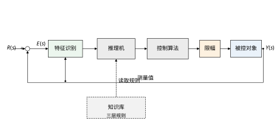
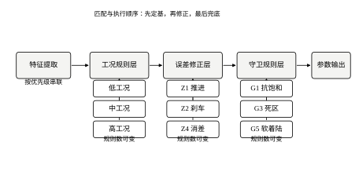
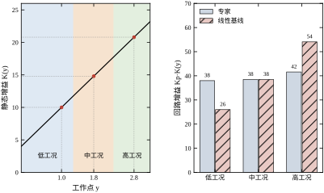
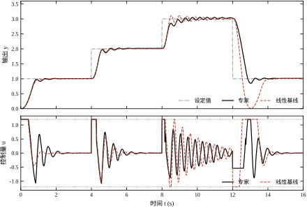
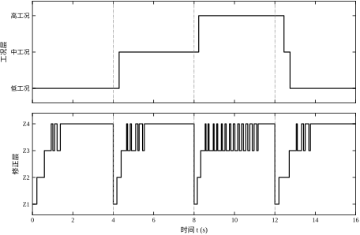
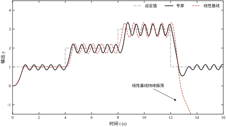
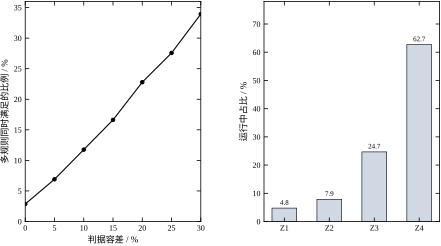
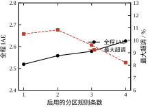
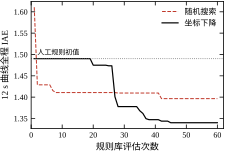

第 44 章把 PID 讲透了：三个参数、几条整定规则、一套抗饱和与微分滤波，绝大多数单回路都能调出一个能交差的响应。问题出在“一个”这个词上。PID 参数是围绕某个工作点整定的，工作点一挪，对象增益、时间常数、纯延迟全都在变，原来那组参数就从“恰到好处”变成“要么太猛、要么太肉”。
实际装置上这种漂移几乎必然发生。换热器的传热系数随结垢缓慢下降，反应釜的放热速率随转化率上升，阀门的流量特性在小开度段明显变陡，机械臂在伸展位与收缩位的惯量差出一倍。把这些差异都塞进一个线性模型，模型误差最终会以超调、振荡或长期偏差的形式回到闭环里。
工程上最早的应对是分段调度：把工况切成几段，每段整定一组参数，运行时按测量值切换。这已经是一只脚踩在专家控制的门槛上了——它承认“控制知识是分情况的”，只不过所有情况都用同一种后件（一组 PID 参数）来表达。
老师傅的判断很少写成方程，而是“如果……就……”。“偏差还大、而且越拉越大，就别再攒积分了，先把阀门推上去”“快到设定值了、速度还很快，要提前收一收”“阀门已经顶到上限、偏差还没回来，这时候积分再攒就是白攒”“输出在设定值附近来回蹭，把比例带放宽一点”。
这些话有三个共同点。第一，前件都是可测量：偏差、偏差变化率、控制量、输出工作点，没有一条需要知道扰动的具体大小。第二，后件都是对控制器本身的调整：改增益、冻结积分、限幅、保持。第三，规则之间有优先级：保安全的规则压过保性能的规则。
专家控制做的就是把这类知识显式地写下来，交给机器在每一个控制周期里匹配、选择、执行。它不试图用一个统一的数学结构去逼近人的全部经验，而是承认经验本身是分片、分层、有优先级的。
一套专家控制器由三块构成，缺一不可。
知识库是规则与事实的集合。规则形如“若前件成立，则后件执行”，事实则是当前的工况标签、限幅值、对象增益表这类静态信息。知识库的质量决定控制器的上限——推理机再精巧，也推不出库里没有的知识。
推理机负责在每一拍把当前测量映射到一条（或几条）规则上，解决冲突，输出后件。它是专家控制里唯一“在线运行”的部分，因此必须足够快、足够确定：工业现场的控制周期常在 10 ms 到 100 ms 之间，推理不能有不确定性。
控制算法是后件的执行机构。绝大多数工业专家控制器并不另起炉灶，而是把后件落成 PID 参数或 PID 的修正动作，于是底层的稳定性分析、抗饱和手段、离散实现全部可以沿用第 44 章的结论。这也是专家控制在工程上比“纯智能方法”更容易落地的主要原因。
图 66-1 给出了本章采用的闭环结构。特征识别从设定值与测量值中提取 e、\dot e 与工作点 y；推理机读取知识库，输出本拍生效的 K_p,K_i,K_d 以及若干开关量；控制算法仍是一个位置式 PID，只是参数逐拍变化。

专家控制、模糊控制、神经网络控制常被并称为“智能控制”，但三者的知识来源完全不同。专家控制的知识是人写进去的，规则条数有限，每一条都能被工艺工程师读懂并质疑；模糊控制把人的语言变量连续化，靠隶属函数与规则表做插值，本质上仍是人写规则，只是前件变软了；神经网络控制的知识从数据里学，规则不以人能读的形式存在。
这个差别决定了三者的适用场景。规则能被清楚说出来、条数不多、又必须可审查的场合，专家控制最合适；前件边界模糊、需要平滑过渡的场合，模糊控制更自然；对象复杂到人写不出规则、但有大量数据的场合，才轮到神经网络。本章第 67、68 章会分别展开后两者，本节只强调一点：专家控制的价值不在“智能”这个标签，而在知识的可读性与可维护性。
为了让比较有意义，本章不拿一个线性对象来演示。考虑一个增益随工作点变化的单回路
\ddot y = -2\dot y + K(y)\,u,\qquad K(y)=4+6y \tag{66-1}
工作点从 1 升到 3 时，静态增益从 10 涨到 22，变化超过一倍。固定参数的线性 PID 只能在某一个工作点附近合适；而工况规则层的作用，正是让回路增益 K_pK(y) 在三个工况下近似持平。
本章会用一条 1\to2\to3\to1 的四段迁移轨迹，把专家控制器与同一循环、同一抗饱和口径下的固定参数线性 PID 放在一起比较，逐段给出超调、上升时间、调节时间与 IAE。所有数字都由 code/ch066_sim.py 生成，图由 code/ch066_figs.py 生成，读者可以完整复现。
专家控制容易写成一本“规则大全”，本章刻意收窄范围。规则的自动挖掘、知识图谱、专家系统外壳、与 DCS 组态的接口细节，只在第 66.9 与 66.10 节按需提及，不展开成独立体系。稳定性分析也不追求混杂系统的严格判据——那需要 Lyapunov 函数或混合自动机工具，超出本章范围；本章给出的是可操作的工程判据与仿真验证路径。
工程上的专家控制器很少是一步设计出来的，多数是从分段 PID 逐步长出来的。把这条路径讲清楚，比直接抛出三层结构更容易理解每一层为什么存在。
第一代是单组参数。整定一次，全工况通用，靠降低增益换取稳定，代价是响应慢、稳态误差大。
第二代是分段调度。按负荷或工作点把参数分成两三组，切换时用斜坡过渡。这一代解决了“高工况振荡、低工况迟钝”的矛盾，但切换本身带来新问题：切换点附近参数来回跳，控制量出现台阶。
第三代加入误差修正。工程师发现，即使在同一个工况内，起步、接近、稳态三个阶段要的参数也不一样，于是按偏差大小再分几档。这一代解决了超调，但规则开始变多，边界开始重叠。
第四代加入守卫。现场出过几次积分饱和导致的长时间偏离，也出过阀门反复动作导致的机械磨损，于是把“什么时候必须停手”写成独立的规则，优先级最高。这一代解决了安全性，规则库也从“参数表”变成了真正的“知识库”。
本章的三层结构就是这条路径的终点，也是它的一般化：工况层对应第二代，修正层对应第三代，守卫层对应第四代。理解了这个对应关系，读者在设计自己的控制器时就能判断“我现在缺的是哪一代”。
十二节的安排遵循“为什么—是什么—怎么做—怎么做好”的顺序。
第 66.1 到 66.3 节回答“为什么需要、数学上是什么、按什么步骤做”，是必读部分。第 66.4 与 66.5 节分别从连续与离散两个角度展开实现细节，读者可按自己的实现平台选读：做 DCS 组态的读者重点看 66.5，做理论分析的读者重点看 66.4。
第 66.6 节给出稳定性与性能的定量结果，是本章的证据部分。表 66-2 与表 66-3 的数字都可以由脚本复现，建议读者跑一遍再读结论。
第 66.7 与 66.8 节是参数与调参，属于经验性内容，初读可跳过，动手时再回来查。第 66.9 节讨论优化与自学习，是本章与后续章节的接口。第 66.10 与 66.11 节讲工程落地与边界，适合项目负责人阅读。第 66.12 节是代码说明。
如果只有半小时，建议读 66.1、66.2 的三层结构部分、66.6 的两张表、66.11 的反例。这四块合起来，能回答“专家控制值不值得用”这个最实际的问题。
在进入公式之前，先澄清三个几乎每次都会遇到的误解，它们会让人在一开始就把方向走偏。
第一个误解是“专家控制属于人工智能，所以要靠算法自己找出规则”。工业界的专家控制恰恰相反：规则是人写的，代码量很小，主要工作量在访谈与现场试验上。它的“智能”体现在把隐性经验显式化，而不是体现在搜索或学习上。本章第 66.9 节确实讨论了一个学习乘子的小实验，但它的定位是“帮人微调已有规则”，不是“从零生成规则”。
第二个误解是“规则越多越聪明”。规则增加带来的是覆盖面，代价是冲突、耦合与验证成本。表 66-6 给出的实测结论很反直觉：分区规则从一条加到四条，全程 IAE 反而上升 4.2%，只是最大超调从 10.51% 降到 8.22%。也就是说，多出来的三条规则买到的不是“更准”，而是“更稳”，这笔交易是否划算取决于你对超调的容忍度。
第三个误解是“专家控制可以替代有经验的工程师”。真实情况是它把工程师的经验固化下来，让夜班、换人、退休之后仍能保持一致的操作水平，但对象一旦变化，仍然要靠人来判断和修改规则。把它当成“经验的外存”，而不是“经验的替代品”，这个定位才不会跑偏。
这三个误解的共同点是把手段当成了目的。专家控制的目的从来不是“用上智能算法”，而是在模型不准、经验清晰的场合，得到一个可解释、可审查、可回退的控制器。记住这一点，后面所有设计选择都好判断。
一条产生式规则写成
\mathcal{R}_i:\quad \text{IF } \bigwedge_{j=1}^{m_i} P_{ij}(z) \quad \text{THEN } \ \theta_i=\Theta_i(z) \tag{66-2}
其中 z=[e,\dot e,y,u]^{\mathsf T} 是本拍的特征向量，P_{ij} 是形如 e\ge a、e\dot e<0、|u|\ge u_{\max} 的原子谓词，\theta_i 是后件，\Theta_i 给出本拍生效的参数或动作。式 (66-2) 与 PID 的联系在于：后件最终都折算成 K_p,K_i,K_d 与三个开关量（冻结积分、复位积分、保持输出）。
把后件写成“基参数乘乘子”而不是绝对参数，是本设计的关键。工况层给出一组基参数 \theta^{0}(y)，修正层给出无量纲乘子 \phi(e,\dot e)，守卫层给出开关 \sigma，合起来
\theta=\sigma\odot\bigl(\phi\odot\theta^{0}(y)\bigr),\qquad \theta=[K_p,K_i,K_d] \tag{66-3}
乘子的量纲是一，取值集中在 0.7 到 1.6 之间。这样做有三个好处：工况整定结果可以直接搬进来当基参数；修正规则可以在不同工况间复用；某一层失效时，退化后的行为仍然是一组合法的 PID 参数，而不是失控。
规则之间不是平权的。本章采用三层串联，如图 66-2 所示。
第一层是工况规则，前件只有实测工作点 y，后件是三组基参数。它回答“现在这个位置，对象大概是什么脾气”。注意前件刻意不用设定值 r：用 r 选参数等于提前偷看了指令，一旦设定值跳变，参数会在对象还没反应时先切过去，造成不必要的冲击。
第二层是误差修正规则，前件是 |e| 与 e\dot e 的符号，后件是乘子。它回答“当前这一拍是猛推、刹车、细调还是消差”。这一层的四条规则覆盖了整个 (e,\dot e) 平面，图 66-4 给出分区。
第三层是守卫规则，前件是饱和、振荡、死区、换向这类“危险征兆”，后件是开关动作。它回答“现在有没有可能把积分器、执行器或机械结构搞坏”。守卫层优先级最高，一旦触发就覆盖前两层的结论。

工况分层不是随手切三刀，它由对象增益曲线的形状决定。对式 (66-1)，静态增益是 y 的线性函数，从 0 到 3 变化近三倍。若沿用同一个 K_p，回路增益 K_pK(y) 就会随工作点线性漂移，高工作点处的相位裕度被吃掉，低工作点处又显得迟钝。
把 y 分成 [0,1.3)、[1.3,2.3)、[2.3,\infty) 三段，每段内增益变化不超过约 1.5 倍，用一组参数足以覆盖。三段各自整定后得到
(K_p,K_i,K_d)= \begin{cases} (3.80,\ 0.05,\ 0.90), & y<1.3\\ (2.60,\ 0.05,\ 0.60), & 1.3\le y<2.3\\ (2.00,\ 0.05,\ 0.60), & y\ge 2.3 \end{cases} \tag{66-4}
对应的回路增益分别是 38、38.5、41.6，基本持平；而固定参数 K_p=2.60 的线性基线在同一轨迹上是 26、38.5、54，两端都偏离了设计点。图 66-3 把这两条曲线画在一起，平坦与倾斜的对比一目了然。

误差修正层要解决的是“同一工况下不同阶段的矛盾”。以大阶跃为例：起始阶段偏差大，需要把控制量推满；接近目标时偏差变小但速度仍大，如果还按大误差的增益推，必然冲过头；进入小误差区后，又需要积分把残差磨掉。
四条规则的后件乘子取为
\phi_1=(1.00,0.00,0.80),\quad \phi_2=(0.90,0.00,1.60),\quad \phi_3=(0.85,1.00,1.30),\quad \phi_4=(1.00,1.50,1.00) \tag{66-5}
Z1 把积分乘子置零，即“积分分离”：大误差期间积分只会积出一个大包袱，不如先不积。Z2 把比例压到 0.9、微分放大到 1.6，这就是“提前刹车”，用微分项吃掉动能。Z3 继续加阻尼，Z4 则反过来放大积分，让小残差尽快消掉。
分区判据带滞环，写成
\text{zone}(k)= \begin{cases} 2, & |e|\ge \eta_e E_b,\ e\dot e<0,\ |\dot e|\ge \eta_b D_b\\ 1, & |e|\ge \eta_e E_b,\ \text{否则}\\ 3, & |e|<\eta_e E_b,\ |\dot e|\ge \eta_s D_s\\ 4, & \text{否则} \end{cases} \tag{66-6}
其中 \eta_e,\eta_b,\eta_s 在退出时取 0.85，进入时取 1。滞环的作用不是提高精度，而是阻止规则在阈值附近逐拍来回切换——下一节会看到，没有滞环时闭环会出现周期约 0.2 s 的极限环。
四条守卫规则可以写成统一的开关形式。记 \mathbb{1}[\cdot] 为示性函数，则
\begin{aligned} \sigma_i &= 1-\mathbb{1}\bigl[\,|u_{k-1}|\ge 0.95u_{\max}\ \wedge\ e_k\dot e_k>0\,\bigr] && \text{(G1)}\\ K_p &\leftarrow K_p\,(1-0.2\,\mathbb{1}[\,\text{osc}\ge 4\,]) && \text{(G2)}\\ \theta &\leftarrow \theta\,\mathbb{1}\bigl[\,|e|\ge e_d\ \vee\ |\dot e|\ge d_d\,\bigr] && \text{(G3)}\\ e_i &\leftarrow e_i\,\mathbb{1}\bigl[\,\text{not}(|e|\ge E_b\wedge ee_{\text{prev}}<0)\,\bigr] && \text{(G4)} \end{aligned} \tag{66-7}
G5 是下行软着陆，作用在控制量上而不是参数上：当 e<-E_b 时把负向控制量限制在 -0.45u_{\max} 以内并冻结积分。它针对的是“设定值大幅下调、对象带着正速度冲过目标”这一具体场景。
把式 (66-3)、(66-6)、(66-7) 合起来看，闭环已经不是线性系统，而是一个分段仿射的混杂系统：连续状态是 (y,\dot y,e_i)，离散状态是工况号与分区号，切换由 z 穿越若干超平面触发。这类系统的稳定性没有现成的频域判据，工程上只能退而求其次：保证每个驻留子系统稳定，并保证切换不频繁到激发未建模动态。
推理机的每一拍要做一次“匹配—选择—执行”。匹配是把当前特征代入所有规则的前件，得到命中集合 \mathcal{M}(z)=\{i:P_{ij}(z)\ \text{全部成立}\}。理想情况下 |\mathcal{M}|=1，实际中常有多条同时命中，需要选择。
固定优先级的选择写成
i^{*}=\arg\min_{i\in\mathcal{M}(z)}\ \pi_i,\qquad \pi_{\text{守卫}}<\pi_{\text{修正}}<\pi_{\text{工况}} \tag{66-16}
\pi_i 越小优先级越高。这一策略的优点是结果确定、可离线穷举验证；缺点是优先级本身是人工排定的，排错时会出现“该刹车的工况被推进规则压住”这类问题。
另一种常用策略是特异性优先，即命中规则中前件谓词最多、阈值最紧的那条胜出。形式化地，给每条规则定义特异性分数
\kappa_i=\sum_{j=1}^{m_i}\Bigl(1-\frac{\text{阈值宽度的归一化值}}{1}\Bigr) \tag{66-17}
取 \kappa_i 最大者。它的直觉是“越具体的规则越了解当前情况”。两种策略可以叠加：先按层分优先级，层内再比特异性。
本章只用固定优先级，原因是规则少、层间语义清楚，特异性分数反而增加调试负担。规则数超过三十条时，建议引入特异性作为层内消解手段。
三层规则要满足两个性质，否则会出现“无规则可用”的空洞。
完备性指对特征空间中的任意一点，至少有一条规则命中。工况层按 y 的全集划分，天然完备；修正层按 |e| 与 |\dot e| 的符号划分，也完备；守卫层是叠加动作，不参与完备性讨论。因此本章的规则库是完备的。
可达性指每条规则在正常运行的轨迹上确实会被触发。第 66.8 节的触发统计就是可达性的经验检查：Z1 占 4.75%，说明它可达；若某条规则占比为零，要么轨迹没覆盖到，要么前件写错了。
两个性质都可以用网格穷举验证。本章的 zone_coverage 在 121\times121 的网格上统计四个分区的占比，结果 Z1 27.31%、Z2 23.93%、Z3 43.92%、Z4 4.84%，没有空洞。注意这个静态占比与第 66.8 节的运行占比差别极大：前者是特征空间的面积，Z4 只占 4.84%；后者是时间占比，Z4 占 62.69%。两者不能混用，也不能用其中一个去推断另一个。
规则库的规模在动手前就该估出来，因为它决定了验证成本，而验证成本往往才是项目能不能交付的关键。
设工况数为 n_m，分区数为 n_z，守卫数为 n_g。本章采用的乘子化结构下，规则条数是 n_m+n_z+n_g，参数个数是 3n_m+3n_z 加若干守卫阈值。本章的 3、4、5 给出 12 条规则、21 个连续参数，规模很小，一张表就能看全。
但验证场景不是线性增长。每个“工况—分区”组合都可能需要在不同外部条件下检验，若外部条件有 n_s 类（本章是理想、噪声、延迟加倍、限幅收紧四类），场景数约为 n_m n_z n_s。本章是 3\times4\times4=48 个场景，仿真跑一遍不到十秒，可以全跑。若工况扩到 6 个、分区扩到 6 个，场景数升到 144 个，仍然可跑；若再引入两路扰动组合，场景数按乘法继续涨，很快就会到“跑得完但看不完”的地步。
这条算术给出两个实用推论。第一，扩张应当优先加守卫而不是加工况：守卫只增加 n_g 条规则和 n_g n_s 个场景，工况却让场景数乘上 n_z n_s。第二，验证必须自动化——把场景、指标、判定阈值写成脚本，跑完自动出表，否则规模一上来，人工看曲线必然漏。
还有一项常被忽略的成本：规则之间的耦合检查是 O(n^2) 的。12 条规则要检查 66 对，30 条规则要检查 435 对。本章用固定优先级绕过了大部分耦合分析，代价是放弃了“两条规则同时触发时取更强动作”这类更精细的语义。规则数超过三十条时，这个简化就开始显得粗糙了。
专家控制的设计不像 PID 那样有现成公式，但顺序是固定的：先弄清对象，再切分工况，再补修正，最后加守卫。顺序颠倒会带来返工——先写修正规则再切工况，往往会发现同一组乘子在不同工况下符号都要变。
动手写规则前，必须回答三个问题：对象在哪些工作点之间运行、增益与时间常数怎么变、执行器与传感器有什么硬限制。前两个决定工况怎么切，第三个决定守卫规则怎么写。
本章算例的答案是：工作点 1\sim3、增益 10 到 22、控制量限幅 \pm1.2、纯延迟 0.05 s。这些数字不是拍脑袋，而是从机理模型与现场数据里读出来的。若拿不到机理模型，就做几次阶跃试验，在每个常用工作点附近各做一次小幅阶跃，用第 44 章的辨识方法估出局部增益，画成图 66-3 左图那样的曲线。
工况数不宜多。工业实践中一段内增益变化不超过 1.5 到 2 倍即可合并，否则规则表迅速膨胀，切换次数也上升。三段是本例的折中：再少则段内变化太大，再多则边界效应明显。
特征只选那些“每一拍都能可靠拿到”的量。本章用四个：偏差 e、偏差变化率 \dot e、实测工作点 y、上一拍控制量 u_{k-1}。设定值 r 只用来算 e，不直接进规则前件。
量纲必须统一，否则阈值无法复用。偏差按满量程归一化，变化率按“每秒满量程”归一化，控制量按限幅值归一化。归一化后阈值都落在 0 到 1 之间，换一套装置时只需改满量程，不必重写规则的数值。
\dot e 一定要滤波。原始差分的噪声会被微分放大，直接拿去做符号判断会让分区抖动。本章用时间常数 0.05 s 的一阶滤波，折算到 10 ms 采样是 \alpha=0.167。
对每个工况，在局部线性化模型上做一次小阶跃整定，得到一组 K_p,K_i,K_d。整定的评分函数要包含三项：IAE、超调罚分、稳定性硬判据。缺了第三项，搜索很容易停在一个“IAE 好看但闭环等幅振荡”的解上——本章调试时就踩过这个坑，积分饱和后输出偏离目标，IAE 反而被低估。
局部线性模型取式 (66-1) 在工作点处的线性化：G(s)=K(y_0)/[s(s+2)]。小阶跃幅度取 0.5，保证不越出本工况的范围。整定结果就是式 (66-4)。
这一步的产物是一张工况—参数表。表格要连同“整定时用的工作点、阶跃幅度、评分”一起存档，否则半年后没人说得清这组数是怎么来的。
修正规则的目标不是提高稳态精度，而是解决“大误差与小误差要的增益不一样”这个矛盾。写法上建议从两条起步：大误差一条、小误差一条，观察响应后再拆分。
本章拆成四条，依据是 (e,\dot e) 平面的四个象限语义：误差大且在扩大（推）、误差大但在收缩（刹）、误差小但变化快（阻尼）、误差小且变化慢（消差）。四条规则在平面上是完备且互斥的，这一点在第 66.9 节会用覆盖率检查来验证。
乘子的初值可以按经验给：积分分离取 0，刹车段比例取 0.85 到 0.95、微分取 1.5 左右，消差段积分取 1.2 到 1.5。给完之后必须仿真验证，不能只凭直觉。
守卫规则按“最坏后果”排序来写。会损坏设备的（积分饱和导致阀门长时间顶死、下行冲击导致机械过载）排最前，影响性能的（振荡、死区抖动）排后面。
本章五条守卫的触发条件都可以直接从测量里算出来，不需要额外传感器：G1 看 |u| 与 e\dot e，G2 看 \dot e 在 0.5 s 内的变号次数，G3 看 |e| 与 |\dot e|，G4 看 e 是否变号，G5 看 e 是否大幅为负。
守卫规则的阈值要留余量。G1 用 0.95 倍限幅而不是 1.0 倍，是因为数字量输出与执行器之间存在死区，等测到满幅再冻结已经晚了一拍。
规则写完只是开始，真正的功夫在联调。验收至少要做四件事。
第一，逐条规则的触发统计。每条规则在整段轨迹上占多少拍，若某条规则占比低于 1%，要么删掉，要么说明它针对的是罕见工况，需要在专门的试验里验证。
第二，冲突与覆盖检查。把前件放宽 10% 到 15%，看有多少采样点同时满足两条以上规则；这个比例反映规则边界的重叠程度，过高说明阈值设计粗糙，需要靠优先级兜底。
第三，退化测试。把修正层或守卫层逐层摘掉，看性能退化成什么样。若摘掉守卫层后指标几乎不变，说明守卫规则没起作用；若摘掉后系统失稳，说明守卫层承担了过多责任，应该把部分逻辑前移到参数设计里。
第四，扰动与失配测试。噪声、延迟加倍、限幅收紧三种情况下各跑一遍，和线性基线对比。本章的结果在表 66-1 中给出，其中限幅收紧一项专家反而略逊，这个反例在第 66.11 节会专门讨论。
| 场景 | 专家 IAE | 专家最大超调 | 线性 IAE | 线性最大超调 |
|---|---|---|---|---|
| 理想 | 2.625 | 8.22% | 2.997 | 50.23% |
| 噪声 0.005 | 2.770 | 9.22% | 3.024 | 50.93% |
| 延迟加倍 | 4.075 | 32.12% | 54.346 | 43.25% |
| 限幅 ±0.8 | 3.044 | 11.38% | 2.893 | 30.28% |
表 66-1 四段迁移轨迹上的工程细节对比
如果先写修正规则，再回头切工况，会遇到一个尴尬：Z2 的刹车乘子 0.9 是在中工况下试出来的，搬到高工况就刹不住，因为高工况的增益本来就大。这时只有两个选择：给每个工况各写一套修正规则（规则数乘以三），或者回到第一步重新切工况。
本章的三层结构之所以能复用乘子，靠的是工况层已经把回路增益拉平。拉平之后，修正层面对的“等效对象”在三个工况下近似相同。这是一个容易被忽略的设计前提，也是很多工程专家控制器规则爆炸的根源。
设计完成后，规则库应当能整理成一张人可读的清单。本章的清单列于表 66-7，它同时是代码注释与现场文档的来源。
| 编号 | 前件 | 后件 | 说明 |
|---|---|---|---|
| M1 | y<1.3 | K_p,K_i,K_d=3.80,0.05,0.90 | 低增益区，比例可大 |
| M2 | 1.3\le y<2.3 | 2.60,0.05,0.60 | 中增益区，基准参数 |
| M3 | y\ge2.3 | 2.00,0.05,0.60 | 高增益区，比例必须收 |
| Z1 | \lvert e\rvert\ge E_b，e\dot e\ge0 | \times(1.00,0,0.80) | 积分分离，全力推进 |
| Z2 | \lvert e\rvert\ge E_b，e\dot e<0，\lvert\dot e\rvert\ge D_b | \times(0.90,0,1.60) | 提前刹车 |
| Z3 | \lvert e\rvert<E_b，\lvert\dot e\rvert\ge D_s | \times(0.85,1.00,1.30) | 精细阻尼 |
| Z4 | 其余 | \times(1.00,1.50,1.00) | 积分消差 |
| G1 | \lvert u_{k-1}\rvert\ge0.95u_{\max}，e\dot e>0 | 冻结积分 | 抗饱和 |
| G2 | 0.5 s 内 \dot e 变号 \ge4 | K_p\times0.8，K_d\times1.2 | 振荡抑制 |
| G3 | \lvert e\rvert<e_d，\lvert\dot e\rvert<d_d | 参数置零 | 死区保持 |
| G4 | \lvert e\rvert\ge E_b，ee_{\text{prev}}<0 | 积分清零 | 换向复位 |
| G5 | e<-E_b 且 u<-0.45u_{\max} | 限幅并冻结积分 | 下行软着陆 |
表 66-7 规则清单
清单有三个用途。一是审查：工艺工程师可以逐条问“这条什么时候不成立”，比看代码有效。二是实现：代码中的规则顺序与清单一致，便于对照。三是变更：新增规则时先改清单，再改代码，避免只改了代码忘了文档。
清单里没有写出的隐含信息同样重要：M1 到 M3 的分界处有 0.1 的滞环带，Z1 到 Z4 的分界有 0.85 的滞环系数，G3 的优先级高于 G2。这些细节放在代码注释里，清单只保证结构完整。
工况切换比误差分区切换更危险，因为它一次性改变全部三个参数。本章的处理有四条。
第一，分界处加滞环。y 在 1.3 附近时，进入中工况的阈值是 1.3，退出的阈值是 1.25。0.05 的带宽足以吸收测量噪声，又不至于让切换延迟太久。
第二，切换时参数斜坡过渡。仿真中为了看清切换效应没有加，工程实现应加 0.5 s 的线性过渡：K_p(k)=K_p^{\text{old}}+\frac{k}{N}(K_p^{\text{new}}-K_p^{\text{old}})。过渡期间积分照常累积，避免切换造成稳态误差。
第三，切换判据用滤波后的 y。原始测量含噪声，直接比较会让工况号抖动。本章用 0.05 s 的一阶滤波，与 \dot e 的滤波时间常数一致。
第四，切换事件要记录。每次工况切换记一笔日志，包括切换时刻、切换前后的 y、切换前后的参数。现场排查“为什么这一批产品超调大”时，这张日志往往是唯一线索。
一个能交付的专家控制器项目，除了代码，还应当有五份文档。少了任何一份，交接时都会出问题。
第一份是对象特性说明。它要回答“在哪个工作区间、增益与时间常数怎么变、延迟多大、限幅多少”。这份文档是后续所有参数的理由，没有它，别人无法判断某个参数为什么是 3.80 而不是 2.60。
第二份是规则清单，即表 66-7 那样的表。清单必须包含编号、前件、后件、一句人话说明。编号一旦发布就不再复用，即使规则被删除也保留空号。
第三份是参数表，把 21 个连续参数与 5 组守卫阈值列全，标注单位与量纲类别。第 66.7 节把参数分成三类，参数表就应按这三类分组，移植时按组换算。
第四份是验证记录。每个场景对应的指标、是否通过、不通过时的处置。这份记录的价值在事故调查时体现：能证明“这一版在上线前测过哪些情况”。
第五份是回退方案。写清楚如何退回固定参数 PID、回退时是否会引起控制量跳变、回退后由谁确认。很多项目前四份都做得不错，栽在第五份上——真出问题时没人敢按那个按钮，因为没人知道按下去会发生什么。
这五份文档的总量不大，两三页到十几页，但它们决定了这套控制器是“某个人的作品”还是“装置的资产”。
把采样周期想象成趋于零，专家控制器就变成一个连续时间的切换系统：在每一时刻 t，特征 z(t) 落进某个区域，规则给出该区域的参数 \theta(z(t))，闭环由相应的微分方程描述。
控制律写成
u(t)=\operatorname{sat}\Bigl(K_p(z)e+K_i(z)\!\int_0^t e\,\mathrm d\tau-K_d(z)\dot y\Bigr) \tag{66-8}
注意微分项作用在测量值 \dot y 而不是误差 \dot e 上。这一选择在连续域里看不出差别，因为设定值不变时 \dot e=-\dot y；但设定值阶跃时，\dot e 含冲激，u 会瞬间打满。本章的全部仿真都采用式 (66-8) 的形式，专家与线性基线共用这一口径。
分区判据在连续域里是一组超平面：|e|=E_b、|\dot e|=D_s、e\dot e=0。它们把状态空间切成若干块，每块内闭环是线性的，跨块时参数跳变。这样的系统称为分段仿射系统，其解在切换面上连续，但导数一般不连续。
如果规则只有工况层、没有修正层与守卫层，式 (66-3) 退化为 \theta=\theta^{0}(y)，这就是教科书里的增益调度。此时闭环可写成
\ddot y+2\dot y+K(y)K_p(y)\,e+K(y)K_i(y)\!\int e=0 \tag{66-9}
只要 K_p(y) 选得使 K(y)K_p(y) 近似为常数，式 (66-9) 的系数就与工作点无关，闭环动态在整条轨迹上保持一致。这正是图 66-3 右图想要说明的事情：专家控制器的工况层，用一张表实现了增益调度的效果，而不需要在线辨识。
从这个角度看，专家控制并不神秘：它的第一层是查表式增益调度，第二层是分段变增益，第三层是逻辑保护。三层的数学本质都是“按状态切换线性控制器”，区别只在切换依据是人的语义还是连续变量。
在任一驻留区域内，参数固定，闭环是线性的。以 PI 控制、对象 K/[s(s+2)] 为例，闭环特征方程为
s^2(s+2)+K\bigl(K_p s+K_i\bigr)=0 \tag{66-10}
展开得 s^3+2s^2+KK_ps+KK_i=0。按 Routh 判据，稳定的充要条件是
KK_p>0,\qquad KK_i>0,\qquad 2KK_p>KK_i \tag{66-11}
代入式 (66-4) 的三组参数，三个工况都满足式 (66-11)，其中第三个条件在最不利的高工况下余量最小：2\times41.6=83.2 对 KK_i\approx1.1，余量很大。真正紧的不是积分，而是比例与微分的配比——这决定了相位裕度，也是第 66.6 节要定量计算的东西。
每个子系统都稳定，不代表切换系统稳定。式 (66-6) 的分区在阈值附近有明确的边界，如果状态轨迹恰好沿边界滑动，参数就会以采样频率反复切换。
本章调试初期就出现了这个现象：第三段稳态时 y 在 2.94 到 3.09 之间以约 0.2 s 的周期振荡，|e| 在 E_b 附近来回穿越，Z3 与 Z4 逐拍切换。由于 Z3 的 K_p 是 Z4 的 0.85 倍、K_d 是 1.3 倍，切换相当于给系统注入了一个方波扰动。
治理手段有三个，本章都用了。一是滞环：进入用 E_b，退出用 0.85E_b，让边界变成一条有宽度的带。二是限幅：给微分项加 1.0u_{\max} 的上限，防止切换瞬间的导数尖峰直接推动执行器。三是降噪：\dot e 先滤波再判符号。三者合用后，第三段的调节时间从 3.93 s 降到 3.67 s，稳态振荡消失。
图 66-5 给出连续时间视角下的完整响应：设定值在 0、4、8、12 s 处依次取 1、2、3、1，专家与线性基线画在同一张图上。

前三段两者形态接近，差别在超调：第三段线性基线超调 11.86%，专家 2.43%。第四段差距最大，线性基线在 3 到 1 的下阶跃上冲过头，最低到 0.5 附近，超调 50.23%；专家的 G5 软着陆把负向控制量限住，超调压到 8.22%。
控制量图上还能看到另一个差别：专家在每段起始处几乎都把 u 推到限幅，但在接近目标时更早退出饱和。这不是因为它“更聪明”，而是 Z2 的微分乘子 1.6 让它在速度还大时就开始收力。
现代控制器几乎都是数字实现，连续域分析的价值在于给出可解释的判据：式 (66-11) 这样的不等式能直接告诉工程师“参数往哪个方向调还有余量”，而仿真只能告诉“这一组行不行”。
仍有两类场合需要真正的连续实现。一是模拟式后备回路，DCS 故障时由硬件 PID 接管，此时专家逻辑退化为几个模拟开关。二是机电一体化产品中的模拟伺服环，采样率极高、延迟极小，用连续域设计反而更直接。这两类场合的规则层通常只保留工况层，因为模拟电路实现复杂的符号判断不划算。
线性系统里没有“滑动”这个概念，分段系统里有。若状态轨迹撞上切换面后不再离开，而是沿着面滑行，就发生了滑动模态。在滑动期间，系统的等效动态由两个相邻子系统的某种平均决定，与两者都不同。
本章的分区面是 |e|=E_b 与 |\dot e|=D_s。设想没有滞环、也没有死区，轨迹在 |e|=E_b 附近小幅穿越，控制器就在 Z1 与 Z3 之间以采样频率切换。此时控制量的平均值约为两组参数的中点，等效增益既不是 Z1 的 1.00 倍，也不是 Z3 的 0.85 倍。
这个等效增益本身未必坏，坏的是它的高频分量。每次切换，u 跳变一次，跳变幅度乘以对象增益就是一次脉冲激励。对象的高频段若有未建模谐振，这个脉冲就会被放大，表现为控制量毛刺或机械噪声。
滞环的作用是消灭理想滑动：让进入与退出用不同阈值，轨迹撞上面之后必须越过一条带宽才能回来，滑动就不可能持续。本章的 0.85 系数把带宽设为 0.15E_b=0.075，相对噪声水平 0.005 有十五倍余量，足够。
式 (66-14) 的回路传函里，K(y) 只以乘积形式出现在 K_p,K_i,K_d 前面。若令
K_p(y)=\frac{\bar K_p}{K(y)},\qquad K_i(y)=\frac{\bar K_i}{K(y)},\qquad K_d(y)=\frac{\bar K_d}{K(y)} \tag{66-18}
则 L(s) 与 y 无关，幅频特性整体平移，穿越频率与相位裕度都不变。这就是增益调度的理想形式。
本章没有用式 (66-18)，而是用了三档常数。原因是：第一，K(y) 只在标称模型上已知，实际对象还有未建模的增益偏差，精确对消反而把模型误差全暴露在回路里；第二，三档常数实现简单，DCS 里就是一张表；第三，分段常数在每段内仍保留一点增益变化，相当于留了一点鲁棒性余量。
代价是每段内 PM 仍有小幅波动。表 66-2 中三个工况的 PM 是 55.4°、55.0°、54.2°，波动 1.2°，比线性基线的 8.9° 小一个量级。这个 residual 波动来自段内 K(y) 的变化：低工况段内 K 从 4 变到 11.8，整定在 y=1 处（K=10），段底部的实际回路增益只有设计值的 40%。
若对象增益跨度更大，三档不够用，可以增加到五档，或者改用式 (66-18) 的连续对消加一个鲁棒滤波。第 72 章讨论混合架构时会给出选择依据。
把两种做法的增益偏差算清楚，才能判断多分几档值不值。
设某段的增益范围为 [K_{\min},K_{\max}]，整定点取 K_0。若整定点取几何中点 \sqrt{K_{\min}K_{\max}}，段两端的回路增益偏差就分别是对称的 \sqrt{K_{\max}/K_{\min}} 与 \sqrt{K_{\min}/K_{\max}}。用本章的低工况算：K 从 4 到 11.8，跨度为 2.95，几何中点是 6.87，两端偏差 +72\% 与 -42\%。本章实际整定在 K_0=10，一端 0%、另一端 -60\%，故意偏到了一侧。
增益偏差的后果可以量化。回路增益每变化一倍，相位裕度的变化在二十度上下——线性基线三档就是现成的例子：回路增益 26、38.5、54，对应 PM 38.1°、26.3°、13.0°。也就是说，增益偏大是危险的，它直接吃掉裕度；增益偏小是保守的，代价只是响应变慢、抗扰变差。
这就决定了分段的整定点该怎么选。若按几何中点整定，向上那一端要吃掉十五度上下的裕度，55° 的底子会掉到 40°，再扣掉延迟折算的 29°，净 PM 只剩十度出头，已经越过工程底线。本章把整定点放在每段的上部，低工况取 y=1、K=10，段顶 11.8 只比它高 18%，段底 4 则低 60%，最坏情况因此落在“保守”这一侧。
向下偏差的代价是段底响应变慢，但实际影响有限。因为段底通常出现在大偏差的起始段，此时控制量很快被推到限幅，回路处于饱和而非线性区，增益偏低反而减小了超调；等到接近目标、退出饱和时，工作点已经升到段的上部，回路增益回到设计值。这解释了为什么三档就够，而不必按“段内增益恒定”的要求去分五档。
换句话说，三档够用的理由不是精度高，而是整定点偏置得巧：把不确定性推到安全的一侧，比把不确定性均匀摊开更划算。这个思路在增益调度里叫“保守整定”，代价是段底部的动态偏慢，收益是不必为了段顶的极端情况牺牲全局。
连续对消的偏差则只取决于模型误差。若 K(y) 的辨识误差是 10%，对消后的残余偏差也是 10%，折算相位损失不到 3°，比任何分段都小。所以对消的代价不在精度，而在对模型误差没有免疫力：模型偏了 30%，回路增益就偏 30%，没有“段内留余量”这种缓冲，也没有“偏置到安全侧”的操作空间——因为对消的前提就是相信模型。这正是前面说的取舍：分段用精度换鲁棒，对消用鲁棒换精度。
滞环把理想滑动变成了有限幅值的抖振，抖振会不会长成一个稳定的极限环，可以用描述函数粗略判断。
把分区切换看成一个非线性环节：输入是偏差，输出是参数乘子。在滞环带宽 \Delta 内，这个环节的等效增益随输入幅值变化——幅值远大于 \Delta 时，它近似为一个常数（两个分区参数的平均）；幅值接近 \Delta 时，等效增益急剧下降，因为大部分时间都停在滞环里不动。
把这条“幅值—等效增益”曲线与线性部分的 -1/N 判据放在一起看：若两条曲线相交，交点就对应一个可能的极限环，其幅值由交点位置读出。本章的滞环带宽 0.075，而稳态噪声幅值约 0.005，两者差一个量级，交点落在噪声幅值以下，物理上不存在，所以不会形成极限环。这解释了为什么滞环系数取 0.85 就够：不是它“压住了”振荡，而是它把可能存在的极限环推到了噪声水平以下。
反过来，若把滞环取成 0.99（带宽只剩 0.0075），交点就会落到 0.005 到 0.01 的区间，与噪声同量级，此时系统会表现出“时有时无的小幅抖动”——不是持续振荡，而是噪声偶尔把轨迹推出滞环、引发一次切换、再被拉回。这种间歇性抖振在现场极难排查，因为它不满足“周期性”这个通常的判定条件。避免的办法不是继续加宽滞环（那会让规则变迟钝），而是降低特征噪声，比如加长微分滤波。
离散实现的第一要务不是精度，而是顺序。同一组公式，推理与积分的先后不同，闭环行为会差出一截。
本章采用的顺序是：采样与滤波、计算特征、推理得到参数与开关、计算控制量、执行限幅、更新积分、输出延时、对象推进。关键在“更新积分”放在限幅之后：只有确认本拍控制量没有被人为改动（G5 限幅），才决定是否累积积分。若把积分更新提前，G1 的冻结判断只能基于上一拍的状态，慢一拍就足以积出一个包袱。
第二个关键点是 G4 的复位必须发生在积分更新之前。换向瞬间把积分清零，本拍就从零开始积，避免把反向前累积的错误记忆带进来。
位置式 PID 的离散形式为
u_k=\operatorname{sat}\Bigl(K_{p,k}e_k+K_{i,k}T_s\sum_{j=0}^{k}e_j-K_{d,k}\frac{y_k-y_{k-1}}{T_s}\Bigr) \tag{66-12}
其中 T_s=0.01 s。求和用矩形法，不用梯形法：规则切换时 e_k 可能跳变，梯形法会把跳变前后两个值平均，反而模糊了切换时刻的因果。
积分项要单独保存，不能每拍从头求和。本章用累加器 e_i\leftarrow e_i+T_se_k，并在 G1、G4、G5 触发时分别冻结或清零。累加器要做抗饱和回算，否则长时间限幅后累加器会饱和到浮点数的有效位之外，退饱和时出现明显的“积分回吐”。
微分项作用在测量值上，用一阶差分再滤波：
d_k=\frac{y_k-y_{k-1}}{T_s},\qquad d^{f}_k=d^{f}_{k-1}+\alpha\bigl(d_k-d^{f}_{k-1}\bigr),\qquad \alpha=\frac{T_s}{T_f+T_s} \tag{66-13}
T_f=0.05 s，\alpha=0.167。滤波放在差分之后而不是之前，是为了让相位滞后尽量小；若先滤 y 再差分，等效于给微分项额外加了 T_f 的延迟。
连续域的 |e|\ge E_b 在离散域变成逐拍比较，本身没有误差。真正需要小心的是 \dot e 的符号判断：噪声会让符号在零附近抖动，进而让 e\dot e 的符号每拍翻转。
本章对 \dot e 做两层处理。第一层是式 (66-13) 的滤波；第二层是死区，当 |\dot e|<0.02 时把它当作 0，不参与符号判断。死区的代价是极慢的漂移会被忽略，但对本类对象（时间常数 0.5 s 量级）没有影响。
G2 需要一个“振荡”指标。本章的写法是：保留最近 50 拍（0.5 s）的 \dot e，统计相邻两点符号变化的次数，超过 4 次判为振荡。
这个判据的采样窗口与阈值要匹配对象的时间尺度。窗口太短，正常的快速调节会被误判；窗口太长，振荡已经持续了几个周期才被发现。0.5 s 对应对象主导时间常数的约一倍，是本章试出来的折中。
实现上要注意：窗口内若有大量零值（死区造成的），符号变化次数会被低估。因此统计前先把零值剔除，只对非零段计数。
规则匹配的代价是每拍若干次比较与乘法。本章共 3 条工况规则、4 条修正规则、5 条守卫规则，最坏情况下每拍约 40 次比较、10 次乘法，在 100 MHz 的定点 DSP 上耗时不到 2 μs，相对 10 ms 的控制周期可以忽略。
真正占时间的是滤波与历史窗口维护。50 点的环形缓冲区每拍一次写入与一次遍历，遍历是 O(50)，仍然远小于周期。若把窗口拉长到 500 点，就要改用增量式统计（维护符号变化计数，进出窗口时各更新一次），否则在低端 MCU 上会挤占控制周期。
图 66-6 把一次完整迁移中的工况号与分区号画成阶梯图。可以清楚看到三件事。

第一，工况层切换很干净。y 单调上升时，工况号只跳两次，没有来回；下降段从高工况直接跳回低工况，中间穿越中工况的时间极短（不足 0.1 s），因为下降速度快。
第二，分区层在每段起始处必进 Z1，随后进 Z2，稳态落在 Z4。这个“Z1 推、Z2 刹、Z4 磨”的序列在四段中重复出现，说明规则设计与阶跃响应的阶段是对应的。
第三，稳态时分区号基本不动。若在稳态看到分区号频繁跳动，就说明阈值或滞环没调好，这正是第 66.8 节要处理的问题。
离散化还有两个常被忽略的效应。
其一是控制量量化。若执行器是 12 位 D/A，最小步长约为满量程的 1/4096，远小于本章的稳态误差要求，可以忽略；但若用 8 位输出，最小步长约 0.008，与 G3 的死区 0.005 同量级，死区保持就失去意义，此时应把死区阈值放大到量化的 2 到 3 倍。
其二是纯延迟。本章对象含 5 拍（0.05 s）延迟，已计入整定。若现场实际延迟比设计值大，相位裕度会迅速被吃掉，第 66.10 节会给出延迟加倍时的对比：线性基线直接失稳，专家靠 Z2 的阻尼与 G5 的限速勉强维持。
很多现场控制器没有浮点单元，规则推理与 PID 都在定点上跑。定点实现有三个坑。
第一是标度不一致。偏差归一化到 [-1,1]，若用 Q15 表示，1 对应 32767；控制量也归一化到 [-1,1]，同样 Q15；但积分累加器的量纲是“偏差×秒”，数值范围可能到几十，必须单独用 Q12 或更低的标度，并用 32 位字长。三者混用而不做移位，结果会差出几个数量级。
第二是乘法溢出。两个 Q15 相乘得到 Q30，必须右移 15 位回到 Q15。若中间结果用 16 位存，乘积早就溢出；必须用 32 位中间变量。这一步在 C 语言里容易被编译器优化掉，建议写成显式类型转换并在单元测试里覆盖极值。
第三是积分饱和。浮点下积分累加器可以到很大再被钳位；定点下必须先钳位再累加，否则累加本身溢出会回绕成反号，造成控制量突然反向。本章的代码用浮点，工程实现应改成“先算 \Delta e_i，再判是否越界，再累加”。
规则推理本身在定点下没有特殊困难，因为前件都是比较运算；只有乘子运算需要移位。Z1 的 1.00、Z2 的 0.90 这类系数可以预先存成 Q15 常数表，避免在线除法。
专家控制的推理与 PID 运算应在同一个中断服务程序里完成，这一点在第 66.10 节已经提过。这里补充实现层面的三个细节。
其一是执行时间预算。中断服务程序的总时间必须小于控制周期的 50%，留一半余量给通信与其他任务。本章估算的推理耗时不到 2 μs，相对 10 ms 周期可以忽略，但若把振荡检测的窗口拉长到 500 点并每拍全遍历，耗时会涨到 50 μs 量级，仍然安全，但在 1 ms 周期下就危险了。
其二是共享数据的原子性。工况号、分区号这些离散状态会被中断写、被上位机读。若上位机读到“工况号已更新、参数还没更新”的中间态，就会显示错误的参数。解决办法是把状态打包成一个结构体，用双缓冲或关中断的方式整体更新。
其三看门狗。规则推理一旦陷入死循环（比如某条规则的前件写成恒真且后件又触发重新推理），整个控制回路会停摆。看门狗应在推理函数入口喂狗、出口检查，超时则强制退回固定参数 PID。
现场的控制器往往不是单速率。PID 可能跑在 10 ms 任务里，而工艺参数、工况判定这类较慢的逻辑跑在 100 ms 甚至 1 s 的任务里。于是很自然会问：规则层能不能也降速？
答案要分两层。工况层可以降速，而且应该降速。工况是一个“慢变量”，y 跨过分界后停留的时间以秒计，用 100 ms 判定一次完全够用；判定太频繁反而容易被测量噪声推着来回跨边界。降速还有一个附带好处：工况切换时可以做一次性的初始化（比如把积分器按新工况重新标定），这种动作放在快任务里反而不好安排。
修正层不能降速。Z1 到 Z4 的分区依赖 e\dot e 的符号，而符号在大阶跃的起始段每几十毫秒就可能翻转一次。若用 100 ms 判定，Z2 的刹车会晚半拍甚至一拍才生效。本章没有单独做“降低分区更新率”的对照实验，但从图 66-6 的阶梯图可以间接看出这一点：分段起始处从 Z1 到 Z2 的切换只维持了很短一段时间，若把这个窗口按十倍拉长，刹车就会落在误差已经开始收缩之后，等效于取消了刹车。
守卫层必须与 PID 同速率，甚至更快。G1 的抗饱和要在限幅发生的那一拍就冻结积分，晚一拍就已经积进去一个 T_s e；G5 的软着陆要在负向控制量超出软限的那一拍就截住，晚一拍控制量已经冲出去了。这类“事后无法弥补”的动作，只能同步。
由此得到一个实用的分层调度方案：守卫层与 PID 在同一个快任务里逐拍执行；修正层也在快任务里，但可以每两拍算一次并保持到下次更新；工况层放在慢任务里，切换时通过一个“待生效”标志交给快任务处理，保证切换发生在两拍之间的边界上，而不是打断正在进行的计算。
三种速率的比例没有普适值，取决于对象时间常数与采样周期的比值。本章的对象主导时间常数约 0.5 s，采样 0.01 s，比值五十，因此修正层即使每两拍更新一次也几乎没有损失。若比值只有十倍（比如采样 0.05 s），修正层就必须逐拍，否则等效于给规则加了 0.05 s 的纯延迟，这个延迟会直接从相位裕度里扣掉。
规则的前件用的是估计出来的特征，估计有误差，误差会传进参数，进而传进控制量。这条链路值得单独算一遍，因为它决定了阈值能定多细。
以 \dot e 为例。它由一阶差分加滤波得到，本质上是一个带延迟的低通微分器。对频率为 \omega 的分量，其幅值近似为 \omega 乘以滤波器的幅频，相位滞后约 T_f\omega。这意味着在快速变化时，估计出的 \dot e 既偏小又偏晚：偏小会让 |e\dot e| 偏小，从而把本该判为 Z2 的点判成 Z4；偏晚会让刹车迟一点。
噪声与量化误差则直接叠加在 \dot e 上。一阶差分的噪声标准差是 \sqrt2\sigma_y/T_s，再经式 (66-13) 的滤波，标准差按 \sqrt{\alpha/(2-\alpha)} 衰减。把这两个因子代入就能估出 \dot e 的噪声量级：若 \sigma_y=0.005、T_s=0.01、\alpha=0.167，则差分噪声约 0.71，滤波后约 0.21。这个数字与 D_s=0.30、D_b=0.20 是同一量级，说明分区判据离噪声底线并不远。
这也正是必须先滤波再判符号的原因：不滤波的话，e\dot e 的符号几乎完全由噪声决定，分区号每拍乱跳。
既然 \dot e 的噪声有 0.2 量级，为什么 d_d=0.02 这样细的死区还能用？因为 G3 是“与”条件：它同时要求 |e|<e_d 且 |\dot e|<d_d，而 e 的噪声只有 \sigma_y，e_d=0.005 与它同量级。两个条件同时成立的时刻，只可能是真的停在稳态附近——噪声偶尔让 \dot e 冲过 0.02，但那几拍里 |e| 已经被压在 0.005 以内，此时把参数置零不会造成任何跟踪损失。换句话说，G3 的可靠性来自“两个弱判据的与”，而不是来自单个阈值定得多准。
结论是阈值的分辨率有一个下限，约等于“该特征在滤波后的噪声的二到三倍”。低于这个下限的阈值区分不出有意义的东西，只会在噪声里划线。设计时应当先估噪声，再定阈值；反过来，先拍一个好看的阈值再去调滤波，几乎一定会在噪声场景里翻车。
稳定性分析只能逐个子系统做。在每个驻留区域里参数固定，把式 (66-8) 线性化后得到回路传函
L(s)=\frac{K(y)}{s(s+2)}\Bigl(K_p+\frac{K_i}{s}+\frac{K_ds}{T_fs+1}\Bigr) \tag{66-14}
代入三组基参数，用式 (66-14) 算出的相位裕度列于表 66-2。表中“净 PM”一列扣除了 0.05 s 纯延迟在穿越频率处的相位损失 \omega_cT_d。
| 工况 | K(y) | K_p | K_d | 穿越频率 | PM | 延迟折算 | 净 PM |
|---|---|---|---|---|---|---|---|
| 低（专家） | 10.0 | 3.80 | 0.90 | 10.09 | 55.4° | −28.9° | 26.4° |
| 中（专家） | 14.8 | 2.60 | 0.60 | 10.04 | 55.0° | −28.8° | 26.3° |
| 高（专家） | 20.8 | 2.00 | 0.60 | 12.50 | 54.2° | −35.8° | 18.4° |
| 低（线性） | 10.0 | 2.60 | 0.60 | 7.34 | 59.2° | −21.0° | 38.1° |
| 中（线性） | 14.8 | 2.60 | 0.60 | 10.04 | 55.0° | −28.8° | 26.3° |
| 高（线性） | 20.8 | 2.60 | 0.60 | 13.03 | 50.3° | −37.3° | 13.0° |
表 66-2 三个工作点上的相位裕度（增益裕度为无穷，故略）
这张表说明了工况层的作用：专家的 PM 在三个工况下是 55.4°、55.0°、54.2°，几乎不动；线性的 PM 从 59.2° 一路掉到 50.3°，净 PM 从 38.1° 掉到 13.0°。13° 在工程上已经进入危险区，任何未建模的延迟或增益偏差都可能把它推成负值。
增益裕度在这里是无穷大，因为对象是双积分型、PID 又带微分零点，相频特性不会穿越 -180^\circ。这不意味着系统绝对安全：条件稳定系统的裕度体现在相位上，而相位裕度已经被延迟吃掉了一半。
严格判定切换系统稳定需要共同 Lyapunov 函数，工程上不现实。本章用三条可操作的判据。
第一，所有驻留子系统的净 PM 不低于 15°。高工况的 18.4° 刚过线，这也是为什么高工况的 K_p 不能再往上调——把 K_p 从 2.00 提到 2.40，穿越频率升到 12.86，延迟折算变成 −33.1°，净 PM 掉到 14.7°，仿真中超调也从 2.43% 跳到 9.31%。
第二，切换不发生在穿越频率的时间尺度上。若规则每 0.1 s 切换一次，而闭环带宽对应的周期是 0.6 s，切换就相当于持续的激励。本章的滞环把稳态切换次数压到接近零，正是为了满足这一条。
第三，每次切换前后控制量连续。参数跳变会让 u 跳变，跳变幅度乘以对象增益就是一次冲击。Z2 与 Z3 的乘子差异控制在 15% 以内，跳变引起的 u 变化约 0.1，相对限幅 1.2 是 8%，可以接受。
稳定性只是底线，性能要看时域指标。表 66-3 给出四段的完整结果。
| 段 | 设定值 | 专家 Mp | 专家 t_r | 专家 t_s | 专家 IAE | 线性 Mp | 线性 t_r | 线性 t_s | 线性 IAE |
|---|---|---|---|---|---|---|---|---|---|
| 1 | 1.0 | 0.50% | 0.510 | 1.710 | 0.578 | 0.01% | 0.554 | 1.330 | 0.568 |
| 2 | 2.0 | 1.13% | 0.353 | 1.440 | 0.437 | 2.07% | 0.340 | 1.470 | 0.404 |
| 3 | 3.0 | 2.43% | 0.687 | 3.670 | 0.476 | 11.86% | 0.251 | 3.790 | 0.439 |
| 4 | 1.0 | 8.22% | 0.528 | 1.610 | 1.135 | 50.23% | 0.317 | 1.930 | 1.586 |
| 全程 | — | 8.22% | — | — | 2.625 | 50.23% | — | — | 2.997 |
表 66-3 四段迁移轨迹的时域指标（时间单位 s）
表中有一个不太好看的地方，必须如实说：前三段专家的分段 IAE 都比线性基线略高，分别高 1.8%、8.2%、8.4%。原因是 Z1 的积分分离与 Z2 的刹车都在“故意慢下来”，用一点上升时间换超调。第四段则反过来，专家 IAE 低 28.4%，因为软着陆避免了大幅下冲。
全程 IAE 专家 2.625、线性 2.997，低 12.4%。这个总账是划算的，但读者应该清楚它不是“每一段都赢”。
专家控制能改善什么、不能改善什么，从表 66-3 可以读出来。
它能改善的是“最坏情况”。线性基线的最坏超调 50.23%，专家的最坏超调 8.22%，差了六倍。对多数工业回路，超调决定联锁是否动作、阀门是否频繁换向，比平均 IAE 更重要。
它不能改善的是“物理下限”。第三段的上升时间专家 0.687 s、线性 0.251 s，专家慢了一倍多。这不是规则写得不好，而是高工况下 K_p 被相位裕度限制在 2.00，回路增益不能再高。想更快只能减小延迟或提高采样率，规则层无能为力。
图 66-10 把纯延迟从 0.05 s 加倍到 0.10 s，两种控制器都重新仿真。

线性基线在第二段之后进入持续振荡，末段输出在 −1 到 4 之间大幅摆动，全程 IAE 达 54.3，实际上已经不可用。专家控制器虽然超调升到 32.12%、IAE 升到 4.075，但仍能收敛到设定值附近。
这个结果不能过度解读。专家不是“天生抗延迟”，它靠的是 Z2 的微分乘子与 G5 的限速在延迟期间少推一点；同样的思路完全可以用“微分增益加大、比例增益减小”的线性参数实现。真正的区别是专家把这种调整限定在“大误差且收缩”的阶段，不会在稳态也保持高阻尼，从而避免了噪声放大。
严格说，本章回路属于条件稳定系统，“保守一点、把增益调小”这种直觉在这里不能随便用，需要算清楚往哪个方向调是安全的。
把式 (66-14) 通分，开环传函写成
L(s)=\frac{K\bigl[K_ds^2+K_ps(T_fs+1)+K_i(T_fs+1)\bigr]}{s^2(s+2)(T_fs+1)} \tag{66-21}
分母里的 s^2 说明低频段相位趋近 -180^\circ，分子上的两个零点随频率升高把它抬向 0^\circ，再由对象极点 s+2 与滤波极点 1/(T_fs+1) 压回 -180^\circ。相频是一条“先升后降”的拱形曲线，而幅频单调下降，所以 \omega_c 落在拱形的上升段才有裕度。
条件稳定的含义就在这里：增益减小时，\omega_c 沿相频曲线左移。左移的初期相位还在上升，PM 反而变大；继续左移，相位重新趋近 -180^\circ，PM 归零。也就是说，PM 随增益的变化不是单调的，中间有一个极大值。
表 66-2 的数据正好落在这个极大值附近。低工况用 K_p=2.60 时 \omega_c=7.34、PM 59.2°，用 K_p=3.80 时 \omega_c=10.09、PM 55.4°。增益加大，PM 略降，响应变快。所以在这个工作区间里，“降增益更安全”是成立的，本章之所以没有把低工况也统一成 2.60，是为了补速度，而不是为了补稳定。
真正危险的是增益掉到远低于整定值的场景：比如阀门实际行程只有标称的一半、或者对象增益因结垢衰减到三分之一。此时 \omega_c 会掉到 PID 零点频率以下，相位退回 -180^\circ 附近，系统出现低频大幅摆动。这种失稳在现象上和“积分太强”很像，但处置方向完全相反——加微分没有用，必须把增益补回去。
所以现场排查低频摆动时，第一件事不是改参数，而是核对实际回路增益：手动给一个已知的控制量阶跃，看输出的稳态变化量是否与标称增益相符。这一步做对了，才能判断是“增益掉了”还是“参数真的调错了”。
工程上常听到“PM 50° 大约对应 15% 超调”这样的说法，来源是二阶系统的近似 \zeta\approx \mathrm{PM}/100，再套超调公式。这个换算在本书的例子上只能定序，不能定值。
按近似算，PM 55° 对应 \zeta\approx0.55，二阶超调约 13%；而表 66-3 里专家的实测超调只有 0.50% 到 2.43%。差了一个数量级，原因有三。
第一，闭环不是纯二阶。分子上的零点（来自微分与积分）会把阶跃响应往前推、压低峰值，这是零点对消了一部分谐振。
第二，限幅削顶。本章的控制量在每段起始处几乎都顶到 \pm1.2，饱和期间的等效增益远低于线性值，超调被硬生生削掉。这也是为什么表 66-1 里把限幅收紧到 \pm0.8 后，两个控制器的指标都变了——限幅深浅直接改变超调。
第三，规则本身在接近段降增益。Z3 的 K_p 乘子 0.85、Z2 的 0.90，都在快要到位时把回路增益压低，等效于给闭环加了一段变增益的“软着陆”。这一点是线性基线没有的，所以线性的超调（第三段 11.86%）反而更接近二阶近似的预测。
结论是：PM 应当用来判断“稳不稳、还有多少余量”，而不是用来预测“超调是多少”。要预测超调，必须把限幅、零点、规则一起放进仿真；PM 只提供一条与具体轨迹无关的底线。
本章没有给出严格的稳定性证明，这一点必须说明。三条工程判据能覆盖多数现场，但它们是必要条件而非充分条件：存在这样的参数组合，每个驻留子系统净 PM 都大于 15°，切换也不频繁，闭环仍然发散——只要切换序列恰好与系统的某个不稳定模态共振。
要排除这种可能，需要构造共同 Lyapunov 函数或使用混合自动机的模型检验工具。第 72 章讨论混合架构与可解释性时会回到这个问题，本章的处理方式是：用足够多的场景仿真覆盖，并在现场保留一条硬限幅与超时退出的后路。
表 66-2 与表 66-3 里有一个容易被忽略的细节：三组基参数的 K_i 都是 0.05，小到几乎不起作用；Z4 把积分乘子放大到 1.5，实际 K_i 也只有 0.075。这不是调参没调好，而是由对象结构决定的。
式 (66-1) 的对象本身含一个积分器（1/s 环节），对阶跃输入，纯比例控制就能做到零稳态误差。闭环特征方程 s^2+(2+KK_d)s+KK_p=0 的常数项 KK_p 不为零，说明没有极点落在原点，阶跃稳态误差为零。
既然如此，积分项存在的意义是什么？有两个。一是补偿增益失配：若实际 K 比标称值小 30%，纯比例控制的稳态误差仍为零（因为对象积分器保证），但动态会变慢，积分项能补回一部分。二是抑制常值扰动：负载扰动进入对象后，只有积分器能把残差磨到零，纯比例会留下一个与扰动量成正比的偏差。
本章的算例没有加常值扰动，所以积分项的作用被压到最小。这也解释了为什么表 66-6 中加减 Z4 规则对 IAE 的影响只有几个百分点——K_i 本来就不大。
读者若把这套规则搬到不含积分器的对象上（比如一阶惯性 K/(Ts+1)），结论会完全不同：K_i 必须足够大才能消差，Z1、Z2 的积分分离会造成明显的稳态爬行。这是移植时最容易犯的错误。
第三段从 2 升到 3，专家 t_r=0.687 s、t_s=3.67 s，比第一、二段都长。原因不是规则，而是对象增益。
高工况下 K\approx20.8，K_p 被相位裕度限制在 2.00，回路增益 41.6，闭环自然频率
\omega_n=\sqrt{KK_p}=\sqrt{41.6}\approx6.45\ \text{rad/s} \tag{66-19}
阻尼比为
\zeta=\frac{2+KK_d}{2\omega_n}=\frac{2+12.48}{12.9}\approx1.12 \tag{66-20}
\zeta>1 说明闭环过阻尼，没有超调，但上升慢。这就是第三段超调只有 2.43%、上升却要 0.687 s 的根本原因：不是规则把它压慢了，而是为了守住相位裕度，只能接受过阻尼。
对比第一段：K=10、K_p=3.80、K_d=0.90，\omega_n=6.16、\zeta=0.89，接近临界阻尼，所以上升 0.510 s、超调 0.50%，两者都好看。
这个分析给出一条实用的设计经验：若希望各段响应速度接近，应让 KK_p 尽量恒定（本章做到了 38 到 41.6），同时让 KK_d 也尽量恒定。本章的 KK_d 是 9.0、8.9、12.5，高工况偏大，正是 \zeta 偏大的原因。若把高工况的 K_d 从 0.60 降到 0.45，\zeta 会降到 0.88，上升加快，但超调会回升到 5% 左右——又是一个权衡。
专家控制器的参数比 PID 多得多，但按作用可以分成三类：分割参数（决定规则边界在哪）、增益参数（决定每个区域的动作强度）、保护参数（决定何时触发守卫）。三类的调试思路完全不同，混在一起调必然顾此失彼。
分割参数的典型代表是 E_b、D_s、D_b 与工况分界。它们不直接进入控制律，只决定“什么时候用哪条规则”。改一个分割参数，影响的是一整片区域的参数取值。
增益参数的典型代表是 K_p,K_i,K_d 基值与四个乘子。它们直接进入控制律，改动的影响是局部的、连续的。
保护参数是 u_{\max} 的 95%、振荡窗口与次数、死区阈值、滞环系数、微分限幅、软着陆比例。它们的取值通常由硬件特性与噪声水平决定，不该在性能调试中频繁改动。
E_b 是“大误差”与“小误差”的分界，本章取 0.50（相对满量程 3.0 约 17%）。
调大 E_b，更多时间停留在 Z1/Z2 的大误差逻辑里：积分分离时间变长，刹车更早介入，响应更保守，超调更小但稳态更慢。调小 E_b，很快进入 Z3/Z4，积分开始工作，响应快但超调上升。
E_b 的经验取法是满量程的 10% 到 25%。低于 10% 时，正常噪声就会让分区频繁切换；高于 25% 时，Z3/Z4 几乎用不上，修正层退化成“只在大误差时起作用”。
D_s 是区分 Z3 与 Z4 的速度门限，本章取 0.30（每秒满量程）。它要与对象的时间尺度匹配：时间常数越小，稳态时的 |\dot e| 越大，D_s 应相应提高。
D_b 是“刹车”的速度门限，本章取 0.20，比 D_s 小。刹车条件比阻尼条件宽松，是因为刹车的目的是防止冲过头，宁愿早一点介入。
两个阈值都带 0.85 的滞环。滞环系数不宜过小，否则退出困难、规则粘在某一区；也不宜过大，否则起不到防抖作用。0.8 到 0.9 是常用区间。
四个分区的乘子不是独立的六个数字，它们各自对应一种控制意图。
K_p 乘子决定“推的力度”。Z1 取 1.00 表示不改变基参数，因为大误差时基参数已经是按满能力整定的；Z2 取 0.90 表示收力；Z3 取 0.85 表示进一步降低比例、让微分主导。
K_i 乘子决定“积分的开关与强度”。Z1、Z2 取 0 是积分分离，这两段积分只会积出包袱；Z3 取 1.00 保持；Z4 取 1.50 加速消差。注意 Z4 的 1.50 是本章调出来的，早期取 1.20 时末段稳态误差收敛慢，取 2.00 时又出现小幅低频摆动。
K_d 乘子决定“阻尼”。Z2 的 1.60 是全局最大，因为这一段最需要吃掉动能；Z1 的 0.80 是全局最小，因为大误差起步时微分作用会让控制量提前回缩，反而拖慢上升。
0.95u_{\max} 这个系数决定抗饱和的灵敏度。取 1.0 意味着等真正饱和才动作，数字量输出与执行器之间的死区会让它慢一拍；取 0.9 又会在接近饱和时过早冻结积分，导致稳态误差收敛变慢。0.95 是折中。
振荡判据的窗口 50 拍、次数 4，对应“0.5 s 内变号 4 次”。这两个数要一起调：窗口缩短到 25 拍、次数不变，会变得过于敏感；窗口不变、次数提到 8，则要等到振荡很明显才动作。
死区阈值 e_d=0.005、d_d=0.02 由噪声水平决定。本章无噪声时这两个值几乎不触发，加入 \sigma=0.005 的测量噪声后，G3 才开始起作用，把稳态控制量的抖动压下去。
软着陆比例 0.45 是最“场景化”的参数。它假设下降段的负向控制量不需要超过 45% 满量程就能完成跟踪；若对象在低工况的增益很小（本例 K=10），这个假设成立；若增益更小，限得太死会让下降变慢，需要放宽到 0.6 以上。
从调试经验看，各参数对性能的影响从大到小大致是：工况分界与基参数、E_b、Z2 的比例与微分乘子、K_i 的 Z4 乘子、滞环系数、守卫参数。
这个排序有实际意义：现场调试时间有限时，先把工况分界与基参数调对，再调 E_b，最后才动守卫参数。反过来先调守卫参数，往往会在基参数改变后全部推倒重来。
表 66-4 汇总了本章全部参数、取值与作用。
| 参数 | 取值 | 作用 | 调大的后果 |
|---|---|---|---|
| 工况分界 | 1.3 / 2.3 | 切分工作点 | 低工况范围变大，高工况更晚介入 |
| K_p 基值 | 3.80 / 2.60 / 2.00 | 各工况比例增益 | 响应更快，净 PM 下降 |
| K_i 基值 | 0.05 | 各工况积分增益 | 消差更快，易积分饱和 |
| K_d 基值 | 0.90 / 0.60 / 0.60 | 各工况微分增益 | 阻尼增强，噪声放大 |
| E_b | 0.50 | 大小误差分界 | 保守段变长，响应变慢 |
| D_s | 0.30 | Z3/Z4 速度分界 | 更易判为快速变化 |
| D_b | 0.20 | 刹车触发速度 | 更早刹车，超调更小 |
| 滞环 | 0.85 | 分区退出系数 | 退出更难，易粘区 |
| 饱和判据 | 0.95 | G1 触发点 | 更早冻结积分 |
| 振荡窗口 | 50 拍 / 4 次 | G2 触发 | 更易判为振荡 |
| 死区 | 0.005 / 0.02 | G3 保持 | 稳态死区变大 |
| 微分限幅 | 1.00 | 防噪声放大 | 允许更大的微分冲击 |
| 软着陆 | 0.45 | G5 负向限幅 | 下降更快，超调回升 |
表 66-4 本章参数一览
参数不是正交的，几处耦合必须知道。
工况分界与 K_p 基值强耦合：分界一动，段内平均增益就变，基参数必须重调整定。这也是为什么现场改工况分界要走变更流程。
E_b 与滞环耦合：E_b 越小，滞环带越窄，防抖效果越弱。若必须用小 E_b，就要把滞环系数降到 0.75 左右补偿。
Z2 的比例乘子与微分乘子耦合：两者都在“刹车”，同时调大等于双重刹车，会让接近段变得很慢。本章的 0.90 与 1.60 是一起试出来的，单独改动其中一个都要重新看第三、四段的指标。
守卫参数之间基本解耦，因为它们触发条件互斥：G1 看饱和、G2 看振荡、G3 看死区、G4 看换向、G5 看大幅负偏差。唯一可能同时触发的是 G2 与 G3——振荡时误差可能很小，此时 G3 把参数全置零会掩盖 G2 的作用，因此代码中 G3 的判断放在最后，优先级最高。
规则是按“特征区域”定义的，但它的效果会落在“时间轴”上，两者不是一一对应。搞清楚这层映射，调参时才不会改错地方。
Z1 与 Z2 作用于每段的起始与接近，所以它们的改动主要影响第一、二、三段的上升时间与超调，对第四段（下阶跃）影响较小——下阶跃的起始偏差是负的且绝对值大，走的是 Z1，但接近段被 G5 接管。Z3 只在速度较大、误差较小时触发，主要落在每段的“最后一次接近”，影响调节时间而不影响超调。Z4 覆盖稳态，影响末段 IAE 与稳态误差，对峰值几乎没有作用。
守卫层的映射更偏。G1 只在控制量顶到限幅时动作，本章的四段每段起始都会顶到，所以它影响的是“起步阶段”；G2 只在振荡时动作，本章理想工况下一次都不触发，加噪声后才开始起作用；G4 只在误差换向的瞬间动作，作用时间只有一两拍，但那一两拍恰好是超调形成的时刻；G5 只在下阶跃触发，只影响第四段。
这张映射解释了一个常见困惑：改 Z4 的乘子，全程 IAE 动了，但最大超调一点没变。这不是参数没生效，而是它作用的那段时间里根本不存在峰值。反过来，改 G5 的比例，只有第四段的指标会动，前三段完全不变——本章调试时正是靠这个特性，把第四段的超调单独压下去而没有牺牲前三段。
因此调参的顺序应当按“影响的段”来组织，而不是按“规则编号”来组织。要改超调，先动 Z2 与 G4；要改调节时间，先动 Z3 与 Z4；要改最坏情况，先动守卫层。这样每次调整的效果都能在预期的段上看到，否则很容易因为“改了没反应”而反复加码，最后过调。
移植规则库时，最容易被忽略的是“哪些参数与采样周期绑定”。按量纲分，本章的参数有三类。
第一类是无量纲的比例量，与采样周期无关：乘子、滞环系数、软着陆比例、饱和判据的 0.95。这些可以直接搬。
第二类是物理时间量，与采样周期无关但要以秒为单位保存：T_f=0.05 s、振荡窗口 0.5 s。移植时按新周期换算成拍数：10 ms 周期对应 50 拍，100 ms 周期对应 5 拍。若直接搬拍数，窗口就从 0.5 s 变成 5 s，G2 完全失效。
第三类是每秒变化率，与采样周期无关：D_s=0.30、D_b=0.20 的单位是“每秒满量程”。它们由差分定义天然带时间量纲，只要差分时分母用的是真实 T_s，就无需改动。
E_b、d_d、e_d 是绝对量，与周期无关，但与满量程绑定。换量程时要按比例缩放。
把这三类分清楚，移植时就不会出现“规则都搬过去了，行为完全不对”的情况。工程上建议在配置文件里给每个参数标注单位，代码启动时做一次量纲自检。
一个实用的自检方法是“代回物理量”。把每组参数代回式 (66-14)，算出穿越频率与相位裕度；若穿越频率对应的周期小于采样周期的 10 倍，说明数字实现的相位损失已经不可忽略，参数再好看也不能用。
本章的穿越频率约 10 到 12.5 rad/s，对应周期 0.5 到 0.63 s，相对 0.01 s 的采样周期有五十倍以上余量，所以离散化损失可以忽略。若采样周期改成 0.1 s，余量降到五倍，相位损失约 -6^\circ，净 PM 从 26.3° 掉到 20° 附近，仍在可接受范围；再慢就不行了。
第二个自检是“量程检查”。把 E_b、D_s、D_b 乘以满量程，看是否落在传感器的有效量程内。若 D_s 折算成 0.9 单位每秒，而传感器噪声就有 0.05 单位，那这个阈值实际是在噪声里划线，必须重新设计滤波。
很多工程师拿到专家控制器就开始改乘子，这是最低效的做法。乘子的作用建立在“工况已分段、基参数已整定”的前提上，骨架不对，血肉怎么调都是错的。
推荐的顺序是：基参数 → 分段阈值 → 分区阈值 → 乘子 → 守卫参数。每改一层，都用同一段迁移轨迹跑一遍，记录四项指标（全程 IAE、最坏超调、最大调节时间、控制量总变差）。四项一起看，避免按下葫芦浮起瓢。
基参数不要手调，用第 66.3 节的逐工况整定。整定时有三点经验。
第一，阶跃幅度取工况宽度的一半左右。幅度太大，小阶跃会越界到相邻工况；幅度太小，信噪比不够，整定结果会被数值误差主导。
第二，评分函数必须含稳定性硬判据。本章的写法是：末 100 拍均值与目标的偏差超过 0.01，或标准差超过 0.005，直接加 30 分罚。没有这一条，搜索会选出“IAE 很小但等幅振荡”的解，因为振荡时误差在正负之间抵消，IAE 被低估。
第三，整定完要在全轨迹上复核。局部最优不等于全局可用，尤其在高工况，局部小阶跃整定出的 K_p 可能在大阶跃下激发出未建模动态。复核不通过就退回上一档参数，宁可慢一点。
分区阈值决定规则的时间分配，最直接的调参依据是触发占比。
本章的实测占比是 Z1 4.75%、Z2 7.88%、Z3 24.69%、Z4 62.69%。Z4 占大头是正常的，因为四段轨迹中大部分时间处于稳态附近。若 Z1 占比超过 30%，说明 E_b 太大或轨迹以大阶跃为主，此时应检查是不是把正常调节也划进了“大误差”。
Z3 占比反映“快速变化”的时间。若 Z3 接近零，说明 D_s 设得过高，Z3 规则形同虚设；若 Z3 长期占据稳态，说明 D_s 过低，噪声被判成了快速变化。
图 66-8 右图把四个分区的占比画成柱状，配合左图的冲突率曲线一起看：容差 10% 时冲突率 11.76%，意味着大约每九个采样点就有一个同时满足两条规则。这个水平可以接受，因为优先级明确；若超过 25%，就说明边界设计太粗糙，应该重新划分而不是靠优先级硬压。

乘子是一个小维度的连续优化问题，最实用的方法是坐标扫描：固定其他乘子，把待调乘子按 0.7、0.85、1.0、1.15、1.3 五档各试一遍，取最好的，再换下一个。
本章的调试顺序是 Z2 的 K_p → Z2 的 K_d → Z4 的 K_i → Z1 的 K_d → Z3 的 K_p。前两个决定超调，第三个决定稳态，后两个只影响细节。
扫描时会遇到“指标打架”：Z2 的 K_p 从 0.70 加到 0.90，全程 IAE 从 2.772 降到 2.625，但最大超调从 2.88% 升到 8.22%。选哪一档取决于应用：若超调有硬约束（比如不能触发联锁），选 0.70；若只看平均误差，选 0.90。本章选 0.90，因为它仍在 10% 以内，且 IAE 优势明显。
调参时最有用的是一张“症状—原因—处方”对照表。表 66-5 是本章调试过程中积累的。
| 症状 | 可能原因 | 处方 |
|---|---|---|
| 稳态小幅等幅振荡 | 分区在阈值附近来回切 | 加滞环、给微分限幅、滤 \dot e |
| 大阶跃超调大 | 刹车太晚或太轻 | 降 E_b、加 Z2 的 K_d、降 Z2 的 K_p |
| 上升太慢 | 积分分离过久、微分过早回缩 | 加 E_b、降 Z1 的 K_d |
| 到位后长时间不消差 | Z4 积分不足 | 加 Z4 的 K_i |
| 控制量长期顶在限幅 | 积分饱和 | 查 G1 阈值、查 Z1/Z2 的积分乘子 |
| 下阶跃冲过头 | 负向控制量过大 | 启用 G5、降软着陆比例 |
| 噪声下控制量抖动 | 微分放大噪声 | 降 K_d 基值、加长 T_f、启用 G3 |
| 切换瞬间输出跳变 | 相邻区乘子差太大 | 缩小乘子差、给控制量加斜率限幅 |
表 66-5 常见症状与处理
这张表不是万能的。同一症状可能有多个原因，必须结合触发统计定位：若振荡时分区号频繁跳动，就是切换问题；若分区号稳定而输出仍振，就是该区的参数本身太激进。
调参必须单变量。一次改两个参数，即使指标变好，也不知道是哪个起的作用，下次遇到同类问题无法复用经验。
每次改动都要记录：改了什么、从多少改到多少、四项指标的变化、对应的图。本章的每一次乘子调整都保留了仿真输出，最终才敢在书里写出“Z4 取 1.20 收敛慢、取 2.00 出现低频摆动”这样的细节。
仿真里可以随便试，现场不行。三条约束必须提前设好。
一是硬限幅独立于规则层。无论规则输出什么，执行器前必须有一道与软件无关的限幅（硬件限位或独立的安全 PLC），防止规则错误直接传到阀门。
二是参数切换要渐变。工况切换时若参数瞬间跳变，控制量会跳；现场通常加 0.5 到 1 s 的斜坡过渡，把跳变摊开。本章仿真为了看清切换效应没有加渐变，实际工程应加上。
三是保留旁路。专家控制器要能一键退回固定参数 PID，且退回过程无扰。做法是把固定参数作为“第 0 套规则”，退回时只改参数来源，不改控制结构。
本章调试中最值得记录的一次失败，是早期把“设定值变化”也写进了规则前件：检测到 r 跳变就切到一组“快速跟踪”参数。仿真指标很好看，但现场一试就出问题——设定值连续小幅调整时，规则频繁触发，参数在两组之间来回跳，控制量出现明显的台阶。
根因是因果性：设定值是外部给的，它的跳变不代表对象状态发生了变化。用 r 选参数，等于在对象还没响应时就提前改变了控制器，破坏了闭环的因果结构。改成只用实测工作点与误差特征后，问题消失。这条教训写进了第 66.2 节的设计约定。
带过几批人之后，会发现错误高度集中在三处，而且都不是“参数没调好”，是“结构想歪了”。
第一个错是把规则当补丁叠加。看到超调大，加一条“大误差时刹车”；看到稳态慢，再加一条“小误差时加积分”；看到噪声抖，又加一条“检测到振荡就削增益”。规则越加越多，每条单看都对，合起来互相拆台：刹车规则把误差压小了，反而让积分规则提前接管；削增益规则一动作，误差又变大，刹车规则再次触发。最终系统在几条规则之间来回跳，行为比不加规则还差。正确的做法是先把规则分层归位——工况层管“在哪里”，修正层管“差多少”，守卫层管“不许怎样”——每层的职责互斥，新需求先问“它属于哪一层”，归不进去就说明需求本身没想清楚。
第二个错是阈值取自设定值量程而非偏差量程。有人在 0 到 100 的工程量程上把 E_b 定成 2.0，看着很合理，但对象实际只在 1 到 3 之间运行，2.0 的绝对阈值已经等于整个工作区间的宽度，Z1 几乎永远不会触发。阈值必须以“该回路实际会出现的偏差范围”为标尺，写成无量纲比例。本章 E_b=0.50、而工作区间宽 2 个单位，本质上是区间宽度的四分之一；移植到别的回路时按同一比例换算才对。
第三个错是只看 IAE，不看控制量总变差。IAE 只惩罚误差，不惩罚执行器的折腾。一条“误差一出现就满输出、误差一消失就回零”的规则能把 IAE 压得很低，代价是阀门每分钟动作几百次，几个月就磨坏。所以验收指标里必须同时有控制量的总变差 \sum|u_{k}-u_{k-1}| 和动作次数，两者任一超标都不能上线。
参数迁移不是复制粘贴，是一套有顺序的换算。假设仿真里的回路工作区间是 1 到 3、满量程 4，现场回路工作区间是 40 到 60、满量程 100，可按下述四步走。
第一步，把所有绝对阈值按“满量程比例”换算。仿真满量程 4，现场 100，比例 25：E_b=0.50 换成 12.5，e_d=0.005 换成 0.125，d_d=0.02 换成 0.5。换算完先别急着投，用历史数据回放一遍，看四个分区的触发占比是否与仿真接近。占比差得远，说明两边的偏差分布不同，阈值要按占比而非按比例重新定。
第二步，把所有时间量按采样周期重算。仿真 T_s=0.01 s，现场若为 0.05 s，则微分滤波时间常数 T_f、振荡检测窗口长度、G3 死区保持的拍数都要按秒折算，不能按拍数照搬。本章的 T_f=0.05 s 在 0.01 s 采样下是 5 拍，到 0.05 s 采样下只剩 1 拍，滤波几乎失效，必须把 T_f 提到 0.15 s 左右，用三拍换取等效平滑。
第三步，把乘子原样搬过去，只调工况分界。乘子是无量纲的，跨对象可复用，这是乘子化后件的最大好处；但工况分界点依赖对象的具体非线性形状，必须用现场的静态特性测试重新划分。做法是让执行器在若干固定开度下稳态运行，记录输出，画出 K(y) 的实测曲线，再按增益变化幅度均分。
第四步，把守卫层的限幅值重新标定。u_{\max}、U_{\mathrm{D,CLAMP}}、软着陆比例都直接绑在执行器的物理行程上，仿真里的 0.45 是“不超过满行程的 45%”，现场要按阀门实际可调范围换算，并留出与硬件限位的安全间隔。
四步做完，先空载、再轻载、最后满负荷，每档至少跑一个完整的工况迁移循环。任何一档出现“仿真没有的振荡”，都要停下来查量纲，而不是加规则去压。
第 66.3 节的验收里有一条“逐层摘除”，反过来做就是“逐层添加”。表 66-6 给出分区规则从 1 条加到 4 条的结果，工况层与守卫层始终保留。
| 分区规则数 | 保留规则 | 全程 IAE | 最大超调 | 综合评分 |
|---|---|---|---|---|
| 1 | Z1 | 2.519 | 10.51% | 5.673 |
| 2 | Z1, Z4 | 2.558 | 10.83% | 5.808 |
| 3 | Z1, Z2, Z4 | 2.578 | 9.61% | 5.461 |
| 4 | Z1, Z2, Z3, Z4 | 2.625 | 8.22% | 5.090 |
表 66-6 分区规则条数与性能（综合评分 = IAE + 0.3×最大超调）
这张表的信息量很大，而且和直觉相反。
第一，IAE 随规则增加而单调变差。四条规则的 IAE 比一条高 4.2%。原因还是那个：Z2 的刹车与 Z3 的阻尼都在牺牲上升速度换超调。
第二，超调并不是单调改善。两条规则时最大超调 10.83%，比一条规则还差；加了 Z2 之后才降到 9.61%，再加 Z3 降到 8.22%。说明规则之间的组合效应不可忽略，单看每条规则的作用会误判。
第三，若以“IAE + 0.3×超调”综合评分，四条规则最好。这个权重不是普适的，超调约束严格的场合权重应更大，甚至把超调做成硬约束。
结论是：规则条数应按“超调是否可接受”来裁剪，而不是按“IAE 是否最小”。图 66-7 把两条曲线画在一张图上，双纵轴让这个权衡一目了然。

人工写的乘子是经验值，未必是最优。把乘子当作待优化参数，用仿真轨迹做目标函数，就能让规则库自己改进。本章实现了一个最小的学习器。
待优化变量是 12 个乘子（4 个分区 × 3 个参数）。目标函数是 12 s 轨迹（前三段）上的全程 IAE。搜索方法用坐标下降：每次只动一个乘子，按 0.7、0.85、1.0、1.15、1.3 五档试，取最好的一档，再换下一个。
作为对照，用同预算的随机搜索：每次在 [0.7,1.3] 内独立均匀采样 8 个 K_p 乘子，其余固定。两种方法各给 60 次评估。
结果：坐标下降从 1.490 降到 1.340，改进 10.1%；随机搜索最好到 1.397，改进 6.2%。图 66-9 给出两条收敛曲线。

曲线的形态值得注意。坐标下降在前 15 次评估几乎不动，因为第一轮扫的是 Z1 的三个乘子，而 Z1 在本轨迹上只占 4.75% 的时间，改动影响很小。直到扫到 Z4 的 K_p，曲线才明显下降。这说明坐标下降的效率高度依赖变量排序：把影响大的变量排在前面，收敛会快得多。
随机搜索的曲线是阶梯状的，因为记录的是“到当前为止的最优值”，只有采样到更好的点才下降。它的方差大，同预算下不如坐标下降稳定，但实现简单、易于并行。
坐标下降最终得到的乘子是
\phi_1=(1.00,0.00,0.80),\quad \phi_2=(0.90,0.00,1.60),\quad \phi_3=(0.98,1.15,0.77),\quad \phi_4=(1.49,0.89,0.80) \tag{66-15}
与人工值式 (66-5) 相比，Z1、Z2 几乎没动，说明这两条规则的经验值已经接近局部最优；Z3、Z4 变化较大：Z4 的 K_p 从 1.00 加到 1.49，K_i 从 1.50 降到 0.89，K_d 从 1.00 降到 0.80。
这个变化有物理解释。人工给 Z4 的思路是“小误差慢慢磨，靠积分消差”，所以积分乘子给得大。学习器发现，加大比例、减小积分同样能消差，而且响应更快——因为本例的稳态误差主要来自摩擦以外的模型失配，比例作用直接有效，不必依赖积分慢慢积累。
但要注意：学习器的目标函数只有 12 s 的三段轨迹，没有覆盖第四段下降与噪声场景。学到的 Z4 参数在下降段是否仍然合适，需要另外验证。把学到的乘子代回完整四段轨迹复核，全程 IAE 从 2.625 降到 2.478，最坏超调从 8.22% 变为 8.89%，仍在 10% 以内。这说明在前三段上学到的乘子有一定外推能力，但外推能力不能假设，必须逐场景验证。
复核的完整指标是：全程 IAE 2.478、分段 IAE 依次 0.556、0.400、0.384、1.139，分段超调 2.29%、3.36%、3.08%、8.89%。与人工规则相比，前三段的 IAE 都下降了，第四段基本持平。原因正是上面说的那条：Z4 加大比例、减小积分，让接近段收敛更快。
学习类方法必须回答“要多少数据”。本例的一次评估就是一条 12 s、1200 点的轨迹，60 次评估相当于 7.2 万点仿真数据。
从图 66-9 看，坐标下降到第 40 次评估后基本饱和，再增加预算收益很小；随机搜索到 60 次仍未收敛，说明它的样本效率更低。若把预算加到 200 次，随机搜索可能追上，但计算成本是坐标下降的三倍多。
这条曲线也说明了“数据量—性能”曲线的典型形状：前期快速下降，中期平台，后期只有微小改进。工程上应在平台起点停止，把预算留给场景覆盖（噪声、延迟、不同轨迹），而不是继续抠同一条轨迹上的小数点。
本章用的是固定优先级：守卫 > 修正 > 工况。简单、确定、易验证，但不够灵活。
第一种改进是特异性优先：条件更具体的规则优先。比如“大误差且正在刹车且检测到饱和”比“大误差”更具体，应优先匹配。实现上给每条规则算一个特异性分数（前件谓词个数与阈值紧度），冲突时取分数高者。
第二种改进是加权投票：每条规则给一个后件建议，按可信度加权平均。这种做法的好处是切换平滑，坏处是可能产生“谁都不像”的中间参数，反而破坏可解释性。工业上用得少，多见于学术研究。
第三种改进是规则优先级在线调整：记录每条规则触发后的短期效果（比如接下来 0.5 s 的 |e| 是否下降），效果差的规则降权。这本质上是一种在线学习，要防止“最近一次偶然效果好”导致的漂移，通常加滑动平均与下限保护。
专家控制最常见的融合对象是模糊控制与增益调度。
与模糊控制融合，是把硬阈值换成隶属函数，让分区边界平滑过渡。这样切换抖振问题从根上消失，代价是规则后件不再是一个确定的参数，而是若干参数的加权，稳定性分析更困难。第 67 章会详细展开。
与增益调度融合，是把工况层从“三档查表”升级为“连续插值”。若已知 K(y) 的解析形式，直接令 K_p(y)=K_p^{0}/K(y) 就能精确拉平回路增益，不必分段。专家规则只在无法建模的部分（刹车、守卫）保留。这种“能建模的部分连续化、不能建模的部分规则化”的分工，是第 72 章混合架构的核心思想。
还有一种融合值得提：与迭代学习结合。若设定值轨迹重复，可以用第 69 章的 ILC 修正前馈，专家规则只负责反馈侧的鲁棒性。两者分工明确，ILC 管“重复性误差”，专家管“非重复性扰动与工况变化”。
学习出来的乘子能不能直接用，取决于它稳不稳。判断稳不稳有三个层次。
第一个层次是初值依赖。坐标下降从人工值出发，如果换成从全 1 出发，会落到同一个点吗？本章没有做这个实验，这是一处缺口。经验上，只要目标函数在乘子空间里是单峰的，初值影响就小；一旦存在“多组参数指标相近”的平坦区，不同初值会给出完全不同的解，此时应该把解报告成一个区间而不是一个点。
第二个层次是随机种子。随机搜索的曲线每次都不一样，若换一个种子最优值差出 5% 以上，说明 60 次评估的预算不足以支撑结论，必须加预算或换更稳的搜索。这一条在任何“学习调参”的论文里都应该报告，可惜常常被省略。
第三个层次是轨迹依赖，也是最危险的一层。本例的目标函数是“三段迁移轨迹的 IAE”，学出的 Z4 乘子明显偏向“快”，正是因为这三段都以接近段收尾。换一条以大扰动恢复为主的轨迹，学出的 Z4 大概率会偏向“稳”。所以正确的评估方式是分段留一：用三段中的两段学习、第三段测试，看测试段的指标是否也改善。若只有训练段改善，那就是过拟合，参数不能上线。
工程上的折中做法是：学习只用来“提建议”，最终参数仍由人确认。把学习结果的四项指标与人工值并列打印出来，人看到“IAE 降 5.6%、超调升 0.7 个百分点”，再判断这个交换是否值得。这样既借用了搜索的效率，又保留了人对指标的最终裁量权。
规则写多了会想压缩，压缩有两条路，收益完全不同。
第一条是把“工况 × 分区”的表合并成一张二维查找表。本章的三层结构展开后是 3\times4=12 组参数，每组三个乘子，共 36 个数。既然工况号与分区号都是离散的，完全可以预先算好 12 组最终参数，运行时只做两次索引。这样做的好处是运行开销从“逐条匹配”降为“两次查表”，在 1 ms 级的小型 PLC 上有意义；坏处是丢掉了规则的语义，现场人员看到的是一堆数字而不是“大误差时刹车”这样的句子，维护成本反而上升。
第二条是把近似冗余的规则合并。本章的 12 条里，M1 与 M2 的基参数只差 K_p（3.80 与 2.60），若把工况层从三档减成两档，低工况与中工况共用一组参数，规则数降到 10 条。代价是低工况的回路增益从 38 降到 26，穿越频率下移，响应变慢。这是一次典型的“用性能换简洁”，是否值得要看工况的停留时间：若低工况一年只出现几次，合并划算；若是主要工作区，绝对不能合并。
真正不能压缩的是守卫层。G1 到 G5 每一条都对应一种“会出事”的工况，它们的价值不在平均性能，而在极端情况下的兜底。删掉一条守卫，平均指标可能还略有改善（因为少了约束），但一旦碰上它守护的那个场景就会失控。所以压缩规则库时，守卫层应当被标记为“不可删”，这与软件工程里“不要删掉看似无用的边界检查”是同一个道理。
规则库每改一次，都要回答“原来的场景还好吗”。人工看曲线在规则数少时可行，规则一多就必须自动化，做法与软件回归测试同构。
第一层是单元级测试：给推理机一组人工构造的 (y,e,\dot e,u_{k-1})，断言返回的工况号、分区号、参数三元组、守卫标志。这一层跑得极快，能抓住“改阈值时把判据的不等号改反了”这类错误。本章的 12 条规则至少应覆盖每个分区的中心点、两个边界点、以及守卫触发与不触发的各一对。
第二层是场景级测试：跑完整的迁移轨迹，断言四项指标落在区间内。区间不能设成精确值，否则浮点与环境差异会让测试天天报警；设成“IAE 不超过 2.8、最坏超调不超过 10%”，既能抓住回归，又不会误报。
第三层是边界级测试：专门覆盖极端输入——测量为常数、测量为满量程、控制量长期顶在限幅、设定值与实测值相差极大。这一层不检查性能指标，只检查“不崩溃、不产生越界输出、超时能退出”。
三层测试的维护成本不同。单元级最便宜，改规则时必须同步更新；场景级最贵，改动小的参数调整可以只跑场景而不更新断言；边界级几乎不用改，因为极端输入的定义不随规则变化。
实践中最容易省略的是第一层，理由是“跑整个仿真也就几秒钟”。但整仿真只能告诉你“最终指标变了”，不能告诉你“哪条规则的行为变了”。当一条规则的判据被误改、而整体指标恰好没超阈值时，只有单元测试能发现它。这也是本章把 infer 单独抽成函数、把规则表放在文件头部的原因之一：便于在测试里直接调用，不必启动整个仿真。
规则获取是专家控制真正的成本所在，写代码反而是小事。三条来源各有优劣。
第一条是访谈。找最熟悉这套装置的操作员与工艺工程师，让他们描述“什么时候该怎么调”。访谈的难点在于人对自己经验的表述是跳跃的、省略的，需要追问“如果这时候偏差又变小了呢”“如果阀门已经到顶了呢”。一次有效访谈通常能挖出 5 到 10 条可用规则，但要花两三个小时。
第二条是历史数据。把过去一年的趋势数据拿出来，找出操作员手动干预的时刻，看干预前后的特征量有什么共同点。这种方法能发现人自己都没意识到的规律，缺点是数据质量参差，很多干预是出于工况调度而非控制需要。
第三条是故障复盘。每一次超调、联锁、停车都是规则的最好来源，因为后果明确、边界清楚。这类规则往往直接对应守卫层。
三条来源的产出要统一登记：规则编号、前件、后件、来源、提出人、验证状态。这张登记表就是知识库的原始形态。
规则库是软件，必须按软件的方式管理。最低要求是三条。
每条规则有唯一编号，编号不随内容修改而变。修改时新增版本号，保留旧版本的全文。这样现场出现问题时，能查到“当时跑的是哪一版”。
每次变更要有变更单，写明改了什么、为什么改、在哪些场景验证过、谁批准。工业现场的事故调查往往追溯到某次“顺手改了一个阈值”。
发布要能回滚。规则库打包成一个配置文件，与控制器程序分离；回滚时只换配置，不动程序。本章的代码就是这么组织的：三层规则集中在文件头部，推理机与仿真循环分开。
专家控制器的输出最终要落到 DCS 或 PLC 的功能块上。接口有三个容易出问题的地方。
第一是扫描周期。规则推理必须与 PID 运算在同一个周期内完成，不能跨周期。若 DCS 的功能块周期是 100 ms，而规则里用了“最近 50 拍”的窗口，那窗口实际是 5 s，与设计时的 0.5 s 差十倍。移植时所有时间参数都要按周期换算。
第二是数据质量位。现场测量会短时失效（变送器故障、通信中断），此时特征量是无效的。推理机必须先检查质量位，质量位不好时保持上一拍输出并冻结积分，而不是拿着无效值去匹配规则。
第三是无扰切换。手动转自动、专家转固定参数、主备控制器切换，都必须保证控制量连续。做法是切换瞬间把积分器预置成使输出等于当前手动值的状态，这一手在第 44 章已经讲过，专家控制器同样适用。
规则库在仿真里跑通，距离现场可用还有很长一段。推荐五步。
第一步，离线仿真。用辨识出的模型跑遍所有预期工况，记录每次规则触发的合理性。这一步能发现大部分逻辑错误，成本最低。
第二步，硬件在环。把控制器程序烧进实际控制器，接信号发生器模拟测量，验证周期、定点运算、通信都正常。定点运算的截断误差常在这一步暴露。
第三步，影子模式。控制器在线运行但不接管输出，只把“如果我来控会输出多少”记录下来，与操作员的实际输出对比。这一步通常要跑两周以上，覆盖各种工况。影子模式最大的价值是能发现“规则在真实噪声下疯狂切换”这类仿真里看不到的问题。
第四步，闭环试投。先在低负荷、非关键时段投入，设定值小幅度变化，操作员全程监视。此时守卫规则的作用最大，因为它们就是为异常情况准备的。
第五步，长时间考核。至少覆盖一个完整的生产周期（比如一个月的批次切换），统计规则触发次数、干预次数、指标改善幅度。考核不达标就回到第三步。
投运不是终点。规则库需要持续维护，原因是对象会变：换热器结垢、催化剂老化、阀门磨损，都会让原来的工况分界与基参数失配。
维护的第一手资料是触发日志。每条规则每次触发都记一笔（时间、特征值、后件），定期统计。若某条规则触发频率突然翻倍，往往意味着对象特性变了，或者某个传感器漂移了。
第二手资料是绩效指标。超调率、稳态误差、阀门动作次数，按月统计并与投运前对比。指标缓慢劣化是正常的，劣化速度突然加快则要找原因。
再整定的周期取决于对象漂移速度。本章这类机电对象通常一年一次；化工过程可能一个检修周期就要复核一次。再整定时不必推倒重来，通常只改基参数与工况分界。
规则库也会失效，而且失效方式比线性控制器多。按后果从轻到重排四类，每类都要预先设计应对。
第一类是规则误判。特征量正常，但组合恰好落进一条不该触发的规则。比如噪声让 |\dot e| 瞬间超过 D_b，系统误判为“正在快速收缩”而提前刹车，表现为偶发的响应变慢。这类失效通常不危险，因为它只让参数偏移一点；应对办法是加滞环与死区，而不是加规则去纠偏。
第二类是特征失效。传感器断线、通信丢包、变送器漂移，导致 y 是常数或跳变。此时 e 可能是常数，\dot e 可能为零，规则会判定为“稳态”并切到 Z4 全力积分，控制量慢慢爬到限幅。这类失效最隐蔽，也最危险。应对办法是数据质量位加变化率检查：若 y 在应当变化的时段完全不动，就判为特征失效，冻结积分并保持输出。
第三类是配置错误。工况分界写反、乘子漏了一位、参数表的单位与代码不一致。这类失效在仿真里就能抓出来，只要验证脚本覆盖了全部工况。真正的风险在“改了配置忘了重启”或“两套配置同时生效”，所以配置加载要做校验和，并记录加载时刻的版本号。
第四类是时序阻塞。推理函数因为异常输入进入死循环，或者共享数据被锁住，整个控制周期被拖长。应对办法是看门狗加超时退出，超时后强制使用上一次的有效输出，并在一个固定周期后尝试恢复。
这四类的共同应对原则叫“失效安全”：任何异常都应当让系统退到一个已知的、保守的状态，而不是继续按错误的规则运行。本章代码里对应的做法是：守卫层优先于修正层、限幅独立于规则、异常时退回固定参数。这三条在所有场景下都成立，不依赖任何一条具体规则的正确性，所以它们是可靠性的真正底线。
专家控制器的知识库不属于某个人，属于装置。这一点必须在组织上落实，否则写规则的人一调走，规则库就变成没人敢动的黑箱。
实践中的做法是设一个“控制性能管理员”角色，负责规则登记、变更审批、月度绩效统计。这个角色不需要会写代码，但要懂工艺、看得懂趋势图。
另一个容易被忽略的点是文档。每条规则旁边要写清楚“为什么这么写”，而不只是“写了什么”。本章的规则表里每条都附了一句中文说明，就是为了让后来者能判断这条规则在当前工况下是否还成立。
一套中等规模装置（20 到 30 个控制回路）的专家控制项目，规则获取与验证通常占总工作量的六成以上，编码与调试占三成，剩下的是一成文档与培训。
收益则集中在少数几个“难调回路”上：大滞后、非线性、多工况的回路，专家控制能把超调压下一个量级；而对本来就好调的回路，投入产出比很低，不如继续用固定参数 PID。
这条经验很重要：专家控制不是“更高级所以更好”，它是“用在固定参数不够用的地方”。判断标准很朴素——如果一个回路用第 44 章的方法能在三个主要工况下都调到可接受，就不需要专家控制。
投运报告里最常出现的毛病是“改善明显，操作员满意”，没有数字就没有说服力。可用的口径应当事先约定，并在投运前后用同一套算法计算。
第一组是跟踪指标。把设定值阶跃按幅度分档（小于 5%、5% 到 20%、大于 20%），每档统计超调率与调节时间的中位数与 90 分位数。只报平均值会掩盖大阶跃这一个最危险的档位。
第二组是抗扰指标。取可测的扰动变量（进料量、环境温度）发生明显变化的时段，统计扰动后偏差的最大偏离与恢复时间。这一组往往比跟踪指标更能体现专家规则的价值，因为守卫规则主要在抗扰时起作用。
第三组是执行器指标。控制量的总变差、日动作次数、行程分布。这一组是“成本侧”，改善跟踪指标若以三倍阀门动作次数为代价，总账未必划算。
第四组是可用率指标。控制器投入自动的时长占比、因规则异常退出自动的次数。专家规则越复杂，这一组越容易变差，必须单独盯。
四组指标要同时报，且要给出统计窗口与样本量。只报一组的投运报告，基本可以认为没有做过严格考核。
五步走里最容易被压缩的是第三步，但它恰恰是性价比最高的一步。
离线仿真用的是辨识模型，模型再好也滤掉了真实噪声与真实采样抖动。硬件在环验证了信号通路，但输入是信号发生器给的干净三角波。只有影子模式跑在真实的测量、真实的扰动、真实的操作习惯上，才能看到规则在“带噪声的真实特征量”下如何反应。
影子模式要重点看三样东西。一是分区号的跳动频率，若一个稳态时段内分区号切了几十次，说明阈值被噪声反复穿越，滞环不够。二是守卫规则的触发情况，G1 到 G5 在正常工况下应当极少触发，若每天触发上百次，说明阈值定得太紧，规则实际上变成了常态逻辑，失去了兜底的意义。三是“如果我来控”与操作员实际输出的差异分布，差异集中在哪些时段、哪些幅度，逐段回看趋势图，往往能发现访谈里问不出来的隐性经验。
影子模式还有一个附带好处：它是给操作员建立信任的过程。看着屏幕上的建议值与自己的操作大体一致，操作员才敢在第四步放手让控制器接管。技术上的准备度和组织上的接受度，都要靠这两周积累。
第一，能把无法建模的知识用起来。本章的对象至少还有解析式，真实装置上大量经验是“某个阀在 30% 开度以下会卡涩”“升温速率超过 2 K/min 就会局部过热”这类无法写成微分方程的知识。规则是它们唯一自然的表达形式。
第二，可读、可审查、可追责。每条规则都能翻译成一句人话，工艺工程师可以直接质疑“这条阈值为什么是 0.5 而不是 0.4”。神经网络做不到这一点，模糊规则勉强能，但规则一多就难以逐条讨论。对安全相关回路，可审查性是硬指标。
第三，改动局部化。要改刹车力度，只动 Z2 的乘子；要改高工况的响应，只动工况层那一行。改动的影响范围可以事先画出来，这在调试期非常省事。
第四，能直接复用 PID 的工程积累。抗饱和、微分滤波、无扰切换、限幅保护，第 44 章的所有手段原样可用。专家层只是给 PID 加了一个“参数调度器”，不改变底层结构，运维人员的学习成本低。
第一，知识获取成本高且不可扩展。本章 12 条规则对应一个二阶对象，若对象有五个工况、每个工况四类修正、再加六条守卫，规则数很容易过百。过百之后，冲突检查、覆盖验证、变更管理都变成体力活。
第二，规则之间会互相干扰。表 66-6 显示，加一条 Z4 规则反而让最大超调从 10.51% 升到 10.83%，因为 Z4 的积分作用与 Z1 的积分分离在同一段轨迹上交替出现。这种组合效应在规则少的时候还能靠仿真发现，规则多了就只能靠经验。
第三，没有严格的稳定性保证。第 66.6 节的三条判据是必要条件，不是充分条件。对安全等级要求高的场合（比如飞行控制、核电），这通常是不可接受的，必须改用有 Lyapunov 证明的方法，或者把专家层严格限制在“参数调度”范围内并用增益调度的理论分析。
第四，可解释性有幻觉成分。规则本身好读，但“这 12 条规则合起来为什么能稳住”并不好读。现场出问题时，能查到“当时触发了 Z2 与 G1”，却不一定能说清这两个动作叠加后为什么没出更大的问题。
第五，维护负担随时间增长。对象漂移、工艺改造、人员更替，都会让规则库逐渐与实际脱节。若不设专人维护，三五年后规则库就变成“不敢删、不敢改”的遗留资产。
表 66-1 里有一行不好看的数据：把控制量限幅从 \pm1.2 收紧到 \pm0.8，专家全程 IAE 3.044，线性基线 2.893，专家反而差 5.2%。
原因有两个，都在于规则与限幅的耦合。
一是 G5 的软着陆比例是相对 u_{\max} 定义的。限幅收紧后，0.45 倍的绝对值从 0.54 降到 0.36，下降段的负向能力被砍掉三分之一，第四段的跟踪明显变慢，IAE 上升。
二是低工况的 K_p=3.80 在限幅 0.8 下更容易饱和。基线 K_p=2.60 的饱和程度轻，反而少受积分饱和的拖累。
这个反例说明：专家规则的参数不是无量纲的，它们与执行器能力绑定。执行器换了、限幅改了，规则必须重新标定。工程上把这类参数集中放在配置文件的“执行器”段，就是为了改一处、全库生效。
综合本章的分析，可以用五条判据判断一个回路是否适合专家控制。
其一，对象在工作范围内有明显的非线性或参数漂移，固定参数 PID 在至少一个工况下无法接受。若三个工况都能调好，不必上专家。
其二，工况可以用少量可测量划分。如果工况只能靠“季节”“批次”这类外部信息判断，说明特征选得不对，先解决测量问题。
其三，执行器与传感器有明确硬限制，且这些限制会频繁触发。守卫规则的价值与触发频率成正比，从不饱和的系统不需要 G1，从不振荡的系统不需要 G2。
其四，有可持续的维护力量。至少要有一个人能看懂趋势图、能审批规则变更。
其五，安全等级允许“经验规则”参与闭环。若规范要求形式化验证，专家层只能做参数调度，且调度表要由增益调度的理论保证。
三类场合应明确避开专家控制。
第一类是快回路。采样周期在微秒级的电流环、伺服环，规则推理的开销与确定性都成问题，用固定参数或增益调度更合适。
第二类是强耦合多变量对象。单回路专家规则无法处理“改这个会影响那个”的耦合，这类问题应交第 58、80 章的 MPC。
第三类是数据充足但机理不清的对象。此时人写不出规则，硬写只能写出肤浅的规则，不如用第 68 章的神经网络从数据里学。
本章讲的专家控制，核心是“人写规则 + 分层调度”。若把规则的前件软化，就是第 67 章的模糊控制；若把规则的后件换成网络输出，就是第 68 章的神经网络控制；若把规则用于重复轨迹的前馈修正，就是第 69 章的迭代学习；若把规则用于策略选择而非参数调整，就接近第 70 章的强化学习。
这五章的共同问题是“如何在模型不精确时仍能控制好”，区别只在知识的形式与来源。读者不必把它们看成互斥的方案，第 72 章会给出把几者拼起来的架构，并讨论拼起来之后可解释性还剩多少。
选型问题听起来复杂，实际可以拆成一条只含“是/否”的顺序判断链。顺序很重要，因为先问的问题排除力最强。
第一问：固定参数 PID 能不能在所有主要工况下都达到指标？能，就到此为止。这一问能筛掉工业现场八成以上的回路，先问它是为了不浪费时间。
第二问：非线性或漂移是否可以用一个可测变量解释？能，就优先用增益调度——它的理论最成熟，参数最少，也最容易审查。只有当“调度变量找不到”或“调度之外还有大量经验性约束”时，才继续往下。
第三问：约束与经验能否写成条件语句？能，就是本章的专家控制。这一问的实质是“知识是否已经被人说清楚”。若工艺人员能一口气讲出十条“什么时候该怎么调”，说明知识已经显式化，用规则最经济。
第四问：知识能不能说清楚、但边界模糊？比如“误差大的时候要多刹车，但多大算大说不准”。这时硬阈值会带来抖振，改用隶属函数就是第 67 章的模糊控制。模糊控制并不比专家控制“高级”，它只是把“边界不清”这件事建模进去了。
第五问：知识根本说不出来，只有大量运行数据？这时才轮到第 68 章的神经网络。要注意，神经网络能拟合的是“数据里出现过的行为”，对数据里没有的异常工况没有任何保证，所以工程上通常还要在外面套一层专家规则做守卫。
这条链的一个推论是：混合架构往往不是设计出来的，而是被问题逼出来的。当对象既有可建模的部分、又有说不清的部分、还有硬约束时，任何单一方法都会在某一段露怯，只好拼接。
第 67 章会在同一个非线性对象上做模糊控制，这里先给出预期，便于读者对照。
在稳态附近，两者的差别最小。分区的硬边界只影响边界附近的那一小段，而稳态时特征量离边界很远，规则几乎不切换，专家控制不会抖。
在大阶跃的初始段，模糊控制的优势开始显现。专家控制在 |e| 跨过 E_b 的瞬间参数跳变，控制量出现一个台阶；模糊控制按隶属度加权，参数是连续过渡的，控制量更平滑。这个差异在示波器上看很明显，但对超调的影响未必大，因为超调主要由刹车时机的“平均”决定，而不是由过渡是否平滑决定。
在噪声较大的场合，模糊控制的优势更大。硬阈值加滞环本质上是“用迟滞换稳定”，滞环宽度定得小会抖、定得大会迟钝；隶属函数的重叠区天然提供了平滑，不必在抖与迟钝之间二选一。
代价则在可解释性与可验证性上。专家控制的每条规则都能单独拿出来讨论，模糊控制一旦规则多于二十条，规则表就变成一张难以逐格审查的矩阵；而且模糊系统的稳定性分析至今没有工程上通用的判据，只能靠仿真与保守设计。
所以两者的取舍很清楚：约束明确、需要审查、规则数量可控，选专家；边界模糊、噪声大、需要平滑过渡，选模糊。真正难的是两类特征同时存在的对象，那时通常的做法是外层用专家做守卫、内层用模糊做调节，这也是第 72 章混合架构的一种具体形态。
读者最关心的问题大概是：本章这 12 条规则，换个对象还能不能用？答案要分层说，因为三层规则的可移植性完全不同。
守卫层的可移植性最高。G1 抗饱和、G2 振荡抑制、G3 死区保持、G4 换向复位、G5 单向限速，这五条几乎不依赖对象的具体形式，只依赖“执行器有行程、传感器有噪声、控制量有方向性”这三个普遍事实。搬到一阶惯性、二阶欠阻尼、甚至带滞环的阀门上，逻辑都不用改，只需重新标定阈值。
修正层的可移植性中等。乘子本身无量纲，可以原样搬；但四个分区的“意图”依赖对象的动态特性。本章对象是双积分型，接近段容易冲过头，所以 Z2 的刹车乘子给到 1.60；若对象是一阶惯性、没有超调倾向，这个刹车就纯属拖慢，应该降到 1.0 附近。所以乘子要搬，但搬过去之后必须重新看超调，按“是否需要刹车”调整。
工况层的可移植性最低。它直接依赖“增益随工作点怎么变”，换对象就要重新测量、重新分档。如果新对象的增益几乎不变，工况层干脆可以删掉，只留修正层与守卫层——那时专家控制器退化成一个“带守卫的可变增益 PID”，仍然有用，但已经不是本章讨论的那个完整形态。
最后一条经验是：移植时不要一次全搬，先只搬守卫层。守卫层的风险最低、收益最直接，跑通之后再逐步加入修正层与工况层。这样每一步都有可对照的指标，出了问题也知道是哪一层引入的。
本章的全部数字与插图由两个脚本生成，都放在 code/ 目录下。
ch066_sim.py 负责仿真与指标，运行后打印七组结果：逐工况整定、迁移曲线对比、触发统计、规则规模、冲突与覆盖、规则自学习、工程细节。ch066_figs.py 只负责出图，导入前者的对象与规则，不重复实现算法。
"D:\Anaconda3\envs\py311\python.exe" code/ch066_sim.py
"D:\Anaconda3\envs\py311\python.exe" code/ch066_figs.py两个脚本都只依赖 numpy、matplotlib 与 control，不依赖任何深度学习框架。全部仿真是纯 Python 循环，16 s 轨迹在普通笔记本上不到 0.1 s，自学习部分 60 次评估约 3 s。
第 44 章的闭环一律调用 simlib.simulate_discrete，本章没有。原因是规则切换让闭环成为混杂系统，参数逐拍变化，线性仿真接口表达不了。本章改用文件内的逐步循环，把对象、控制器、延迟、限幅都写在同一个循环里，便于在任意位置插入规则。
代价是要自己保证数值细节正确。为此做了三件事：对象用 5 次 Euler 子步积分，避免大步长失真；延迟用长度为 5 的 FIFO 缓冲；控制量限幅与积分更新顺序严格按第 66.5 节的规定。
三层规则全部集中在文件头部，推理机与仿真循环分开。这样做的好处是改规则不用碰算法，也便于把规则导出成配置文件。
MODE_BANDS = ((0.0, 1.3, "低工况"), (1.3, 2.3, "中工况"), (2.3, 9.9, "高工况"))
MODE_GAIN = {
"低工况": (3.80, 0.05, 0.90),
"中工况": (2.60, 0.05, 0.60),
"高工况": (2.00, 0.05, 0.60),
}
ZONE_FACTOR = {
1: ((1.00, 0.00, 0.80), "大误差且在扩大：积分分离，全力推进"),
2: ((0.90, 0.00, 1.60), "大误差但在收缩：提前刹车"),
3: ((0.85, 1.00, 1.30), "小误差快变化：精细阻尼"),
4: ((1.00, 1.50, 1.00), "小误差慢变化：积分消差"),
}每条修正规则的后件是一个三元组，顺序固定为 K_p,K_i,K_d 的乘子。中文说明与数值放在同一个字典里，是为了让导出配置时两者不脱节。
推理机是本章的核心，只有约 30 行。它做三件事：定工况、定分区、按优先级叠加守卫。
def infer(y, e, e_prev, de, u_prev, osc, zone_prev=0, use_rules=True):
mode = mode_of(y)
base = MODE_GAIN[mode]
z = zone_of(e, de, zone_prev)
if not use_rules:
return mode, 0, base, False, False, ""
f = ZONE_FACTOR[z][0]
kp, ki, kd = (base[0] * f[0], base[1] * f[1], base[2] * f[2])
hold, reset, guard = False, False, ""
s = e * de
if abs(u_prev) >= HOLD_SAT * UMAX and s > 0: # G1 抗饱和
hold, guard = True, "G1"
if osc >= OSC_N: # G2 振荡抑制
kp, kd, guard = 0.80 * kp, 1.20 * kd, (guard + "G2")
if abs(e) >= E_BIG and e * e_prev < 0: # G4 换向积分复位
reset, guard = True, (guard + "G4")
if abs(e) < DEAD_E and abs(de) < DEAD_DE: # G3 死区保持
kp = ki = kd = 0.0
guard = (guard + "G3")
return mode, z, (kp, ki, kd), hold, reset, guarduse_rules=False 时直接返回基参数，这是线性基线的入口。它走的仍是同一个 simulate 循环，同一套限幅与微分口径，因此表 66-3 的对比是公平的——两者唯一的差别就是这一行分支。
simulate 的循环顺序与第 66.5 节一致。下面只摘出控制量计算这一段。
dy_raw = (yk - y_prev) / TS # 微分作用在测量值上
dy_f += alpha * (dy_raw - dy_f)
y_prev = yk
u_d = float(np.clip(-kd * dy_f, -UD_CLAMP * UMAX, UD_CLAMP * UMAX))
u_raw = kp * ek + ki * ei + u_d
uk = float(np.clip(u_raw, sat[0], sat[1]))
# G5 下行软着陆：偏差大幅为负时限制负向控制量，并冻结积分
if use_rules and ek < -E_BIG:
lo = max(sat[0], -DESC_LIMIT * UMAX)
if uk < lo:
uk, hold = lo, True
if use_rules:
if not hold:
ei += TS * ek
else:
if not (abs(u_raw) > sat[1] and np.sign(u_raw) == np.sign(ek)):
ei += TS * ek注意 hold 在这里被复用了：G1 与 G5 都通过置位 hold 冻结积分，积分更新只认这一个标志。这样写减少了分支，但也要求读者清楚 hold 的语义是“本拍不要积分”，而不是“控制量保持”。
segment_metrics 做了两件容易被忽略的事。
一是负阶跃翻正。simlib.step_metrics 假定输出从 0 上升，对 3 到 1 的下降段会算出 nan。处理办法是把输出与目标同时取反，让下降段变成“从 0 上升到 2”，指标定义与上升段完全一致。
二是每段单独取初值。统计第 i 段时，以第 i-1 段的目标值作为本段初值，而不是用全轨迹的起点。否则第二段的“上升时间”会从上一次稳态算起，失去意义。
learn_rules 只有四十来行，但有三处写法值得说明，因为它们直接决定了结果的可比性。
第一处是评估函数 _learn_eval 采用“改—跑—还原”的模式。它先把试算的乘子写回全局的 ZONE_FACTOR 与 MODE_GAIN，跑完 simulate 之后在 finally 里还原原始字典。这样做的好处是不必给 simulate 加一个“参数”形参，推理机始终读全局表，规则库仍是唯一事实来源；代价是这段代码不可重入，也不能多线程并行评估。若要并行调参，必须先把参数结构从全局变量改成显式传参。
第二处是评估的轨迹被刻意缩短。_learn_eval 里用的是 T=12.0、三个设定值点的轨迹，而不是完整的四段 16 s 轨迹。理由有两个：一是把评估成本压到 0.06 s 量级，60 次评估才三秒多；二是让目标函数只反映“上升与第一次接近”这两个最需要权衡的环节，避免下降段那一大段稳态误差把乘子的差异淹没。代价是学到的参数对下降段没有保证，这一点第 66.9 节已经用完整轨迹复核过。
第三处是随机搜索与坐标下降共享同一个评估函数与同一个预算计数。两者都从人工值出发，都调用 _learn_eval，都用同样的 budget 上限，所以图 66-9 的两条曲线是严格可比的。若让随机搜索在连续空间里采样、坐标下降在网格上搜索，比较就不公平了——前者的搜索空间大得多，输是必然的，结论也就没有意义。
还有一个小细节：坐标下降每轮只接受严格改善的移动，指标持平的移动不接受。这样可以避免在平坦区里来回漂移，但也意味着它可能停在“任何一个坐标单独动都变差”的局部点上，需要多起点才能跳出。本章只用单起点，所以第 66.9 节提醒读者把结果看成“一个可用的改进”而非“全局最优”。
conflict_stats 与 zone_coverage 都不参与控制，只服务于设计期的体检，但它们回答的是两个不同的问题。
conflict_stats 在 (e,\dot e) 平面上打 121×121 的网格，对每个格点判断有几条规则同时成立（判据加上相对容差 overlap 模拟“边界带”）。返回的是冲突样本占比。它回答的是“规则边界设计得够不够干净”。这个指标随容差增大而单调上升，图 66-8 左图那条曲线就是它的扫描结果。若容差取 15% 时冲突率已经很高，说明分区之间靠得太近，运行时必然频繁切换，应该先改阈值而不是加滞环。
zone_coverage 用的是同一张网格，但只统计每条规则独占的格点比例，不考虑容差。它回答的是“规则在操作域上的分布是否合理”——有没有哪条规则几乎没有地盘（形同虚设），有没有哪条规则的地盘大得离谱（可能承担了过多职责）。本章的结果是 Z1 27.31%、Z2 23.93%、Z3 43.92%、Z4 4.84%。
这张几何分布与运行时的触发占比几乎正好相反：几何上 Z4 只占 4.84%，运行中却占 62.69%。这不是矛盾，而是说明轨迹长期贴着 (0,0) 附近活动——那一小块面积很小，但被反复经过。反过来 Z1 的几何面积接近三成，运行中只有 4.75%，因为轨迹每次穿越大误差区只花零点几秒。两个数字放在一起，恰好回答了“规则的地盘”与“规则的工作量”是两个不同问题：地盘大而工作量小的规则，说明它的阈值定得宽，可能需要收紧；地盘小却承担大部分工作量的规则，则是最值得仔细调参的那一条。
两个函数都只遍历网格、不跑闭环，因此可以在参数调整后随手调用，作为“改完先看结构”的快速自检。这也是把它们与仿真主循环分开写的原因：结构问题和性能问题应当分两步诊断，混在一起看容易误判。
ch066_figs.py 用 plot_styles 与 block_styles 两个语义助手，不写裸的 matplotlib 参数。十张图各对应一个函数，末尾统一调用 save，同时导出 SVG 与 PDF。
框图（图 66-1、66-2）用 block_styles 与 flow_styles，数据图（图 66-3 到 66-10）用 plot_styles。图内中文一律纯文本，公式一律纯数学，两者不写进同一个字符串——这是全书约定，违反时 matplotlib 会把中文交给数学字体渲染，出现方框。
脚本跑完后，读者可以用下面几个数字核对是否复现成功。
逐工况整定的结果是 K_p=3.80/2.60/2.00，评分 0.165/0.156/0.194。迁移曲线上专家全程 IAE 2.625、最大超调 8.22%，线性基线 IAE 2.997、最大超调 50.23%。自学习部分坐标下降终值 1.340，随机搜索 1.397。
若某个数字对不上，先检查三处：numpy 的版本是否一致（随机数生成器行为稳定，一般不是问题）、control 是否缺失（只有整定部分用到）、Python 是否为 3.11（3.10 以前的 np.sign 对 0 的返回值不同，会影响振荡计数）。
想换对象，只需改 gain_at 与 plant_lin 两个函数，保持局部线性化与非线性模型在工作点处一致即可。想加规则，在 infer 里加分支，并在 zone_coverage 的网格统计里体现，否则覆盖率检查会漏掉新规则。
想验证第 66.9 节的自学习，把 learn_rules 的 budget 改成 200，观察坐标下降与随机搜索的曲线是否交叉。本章只跑 60 次，是因为再大的预算对结论没有影响，反而让脚本变慢。
两个脚本加起来不到六百行，其中规则表与推理机占不到八十行。这个比例本身就是本章想说明的事：专家控制的难点不在代码，而在把经验整理成可执行的判断，以及把这些判断的适用条件写清楚。代码只是最后一步的落地。建议读者先只读规则表与 infer，确认每条规则都能翻译成一句人话，再看仿真循环——顺序反过来，很容易被实现细节淹没，反而看不清规则本身在做什么。
读者若只带走一句话，希望是这句：专家控制的价值不在于“更聪明”，而在于把“什么时候该收手”这件事变成可审查、可复现、可回退的明文约定。第 67 章会把这条约定里的硬边界换成隶属函数，看看平滑能换来什么、又要付出什么代价。